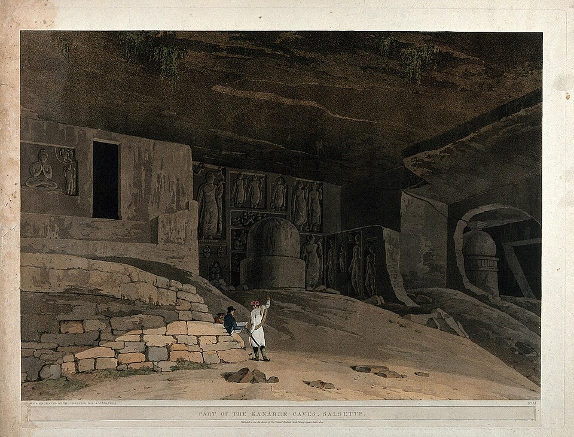

On this page (24 sections)
- A god in a field at Gass
- The silence in the ground (c. 300 – 800)
- Neighbours who left records
- The Christians from Persia
- The Konkan Mauryas and a fleet against Puri (c. 400 – 700)
- Arab sails on the horizon (636 – 660)
- A horse merchant from Taxila (778)
- The Balhara’s coast: Rashtrakutas and the Arab geographers (c. 750 – 975)
- The Shilaharas rise (c. 800 – 1000)
- The villages step out of the dark (1026 – 1049)
- How the Konkan Fourteen Hundred was run
- The ships of Bhabhana and Dhanama (1094)
- Sopara on the Arab map: Biruni and Idrisi (1030 – 1153)
- The Shilahara twelfth century: stones in the villages (1127 – 1203)
- The riddle of Puri
- Gods by the lake: the sculptures of Chakreshwar
- The Jain tirtha of Soparaka
- A new language on stone: Old Marathi
- The people of the island in the Shilahara centuries
- The Yadavas and the viceroys at Bassein (c. 1260 – 1318)
- Delhi reaches the sea (c. 1312 – 1318)
- The friars, the martyrs and the church of St Thomas (1321 – 1322)
- Coda: the island at the turn of the fourteenth century
- Sources for this chapter
Period covered: c. 300 – 1300 CE
In this chapter. For a thousand years little was written down. This chapter pieces together the quiet centuries from stones and copper plates, the neighbours who left records, and the Shilahara kings under whom the villages first appear by name.

A god in a field at Gass
Some time around 1850, people working a field called Sonarbhat, “the gold field”, in the village of Gass, a mile or so south of Sopara, struck stone. What came out of the earth was a figure six feet four inches tall: a man with three heads and four arms, the front face wearing “a pointed rishi-like beard”. In his hands he held a ladle, a rosary, a book of the Veda and a flask of oil, and a swan stood by him. He was Brahma, the creator, carved, the 1882 Gazetteer judged, “probably in the eleventh or twelfth century”. The villagers did not put him in a museum. They carried him to the shallow lake of Chakreshvar, north-east of the old stupa mound, and set him up beside a small modern temple of Shiva, where the compilers of the Gazetteer found him thirty years later. “It is still worshipped,” they wrote, “as Dattatraya.” [n10; Gazetteer 1882 pp. 337–338] [n03; TG-XIV pp. 336–337]
Dattatraya’s footprints would later be set up at Nirmal and on Tungar hill, and his worship runs through the sacred places of this taluka. [n10; §1.11] So a medieval image of one god, lost underground, was found and given the name of another, and went on being worshipped. That small act of renaming is a good emblem of this chapter. The thousand years between about 300 and 1300 CE left Sopara and the creek country around it with a great deal buried and very little written down. For five of those centuries the soil of Sopara itself has given archaeologists almost nothing. Then, from the ninth century, a family of kings called the Shilaharas began to cut their gifts into copper and stone, and for the first time the villages of this coast, Virar and Pelhar, Adane and Vatar, Sandor and Agashi, step out of the dark under their own names.
Chapter 5 ended at a peak and a silence: Sopara at the end of the third century CE, its stupa enlarged, its coins and Roman jars in the ground, and then, as Sila Tripati and A. S. Gaur found in their survey of the Maharashtra coast, “no cultural remains from 4th to 9th centuries”. [n02; Wikipedia: Sopara, citing Tripati & Gaur 1997] This chapter has to walk through that silence honestly, saying plainly where the record is empty, and then tell the story of the kings, merchants, priests, Arab sailors, Persian Christians and Jain pilgrims who filled the second half of the millennium.
The silence in the ground (c. 300 – 800)
Begin with what the spade says, because it is the hardest evidence and the most disappointing. The joint excavation by the Archaeological Survey of India and the British Academy in 1993, and the National Institute of Oceanography’s coastal surveys of 1993–97, found at Sopara lead and copper coins of the Satavahana and Kshatrapa periods, semi-precious stone beads, sherds of Northern Black Polished Ware, Roman amphora pieces, an earthen wall and a coarse stone wall. They also found Islamic blue glazed ware, which belongs to the centuries after 800. Between the two groups, nothing. Tripati and Gaur’s conclusion was that Sopara was a main entrepôt from the pre-Ashokan period to the third century CE and again from the ninth to the thirteenth, with no cultural remains from the fourth to the ninth centuries, and they put the decline down to siltation linked to a change in sea level. [n02; Shah 2020, citing Tripati & Gaur 1997; Wikipedia: Sopara] [n18; Wikipedia: Sopara]
It is worth being precise about what that means. It does not mean that nobody lived here. The 1993 trenches were small, and the town that had been Shurparaka lay under fields, gardens, house plinths and ponds that no one has dug. It means that the excavated layers have no datable material from those five hundred years: no coins, no distinctive pottery, no inscriptions. The two research notes that report the finding both treat it as a gap in the record, not as proof of abandonment, and so does this book. [n02; §5] [n36; §3]
The land and the creek
What changed on the land is easier to state than what changed among people. Sopara stood on a rise in the salt marsh, on what the Gazetteer calls a “garden island”, cut off from the mainland by a backwater whose southern arm was the Manikpur creek and whose northern arm was the Bolinj creek. Before the Portuguese it was called the island of Sopara; under them, the island of Bassein. On this agar, or garden island, lay Bolinj, Koprad and Umbrala to the north, Nirmal and Vagholi to the west, Gass to the south, and Sopara and Mardesh in the centre. The creek, the Gazetteer says, “was once a considerable arm of the sea overflowing a large breadth of land”. [n37; Gaz. XIV pp. 314–315] [n36; Gaz XIV pp. 314–315]
The geographer B. Arunachalam, whose 2002 paper is summarised by Shah, Kale and Bhagyayashsuri, argued that sea level around the second and third centuries BCE stood about half a metre higher than it does now, and that the creek silted over some two thousand years, slowly at first and then quickly once the hinterland was deforested and a railway embankment cut the channel in the nineteenth century. In the Early Historical period, by Tripati and Gaur’s reading, Sopara faced Agashi island to the north and Bassein to the south, with sheltered backwater anchorages between. [n02; Shah 2020, citing Arunachalam 2002; Wikipedia: Sopara, citing Tripati & Gaur 1997] [n36; §6]
No one has measured the silting rate with cores or radiocarbon dates. The research notes say so plainly. [n36; §6 Gaps] So the claim that silt alone explains the silent centuries is a hypothesis, not a finding. What can be said is that the mud-laden Vaitarna to the north and the Ulhas, the Bassein river, to the south were pouring sediment into the backwater the whole time, and that by 1153, as we will see, an Arab geographer placed Sopara a mile and a half from the sea. [n36; Gaz XIV pp. 314–315; E&D I p. 85]
Small voices from the silent centuries
Against the empty trenches, a handful of objects and texts do reach into these centuries, and each needs to be weighed.
The first is in the stupa itself. When Bhagwanlal Indraji opened the Buruda Rajacha Kot mound in 1882, the stone coffer at its heart held, besides the relic caskets and a Satavahana coin, eight bronzes: seven Buddhas, the six of past ages and Shakyamuni, and Maitreya, the Buddha to come. The Asiatic Society of Mumbai, which holds them, dates them to the eighth or ninth century; LiveHistoryIndia dates them by style to the seventh or eighth. They are, in the words of one study, stylistically later than the stupa. Shah and his co-authors suggest they were put in when the stupa was enlarged or repaired, perhaps under the Rashtrakutas, and LiveHistoryIndia lists three building phases: Mauryan, then the first century BCE to the third CE, then an expansion in the Rashtrakuta period. [n02; Asiatic Society of Mumbai; LiveHistoryIndia; Shah 2020; Tibetan Buddhist Encyclopedia PDF]
If the earlier date is right, someone opened the heart of Sopara’s oldest monument in the seventh or eighth century, put in eight bronze images and sealed it again. That person, or that community, left no name. But they were there, and they were Buddhists, and they had access to bronze-casters of real skill. The stupa, as the note on ancient Sopara puts it, “was a living monument for about a millennium”. [n02; §1 Inferences] The bronzes are the strongest single reason not to read the trench evidence as an empty town.
The second is a stone at Nirmal, the old pilgrimage village about six miles north of Bassein. About five hundred yards north of the chief temple, in front of a village house, the Gazetteer’s compilers saw a dressed stone with letters “which seem part of a Sanskrit inscription of the seventh century”. No reading was published; no one in the research notes has seen it since. [n10; Gazetteer 1882 p. 293] [n11; Gaz. 1882 p. 293] It is a single broken line of evidence, but it is a dated one, and it says that someone at Nirmal in the seventh century was writing Sanskrit on stone, which is what one does to record a gift to a god or to Brahmins.
The third is on Jivdhan hill, a mile east of Virar station, where the 1882 Gazetteer found “very old-looking caves and cisterns said to be the work of the Pandavs” and listed the rock-cut cells there among Buddhist or Brahmanic remains. A modern heritage writer believes the cave in which the goddess Jivdani is now worshipped “was originally part of a set of Buddhist caves”. No archaeologist in the notes has confirmed this, and the caves are undated. [n10; Gazetteer 1882 “Jivdhan Hill”; Inditales] They may belong to the silent centuries, or before them, or after.
The fourth is a famous figure that does not, in fact, belong here. The Chinese pilgrim Xuanzang, travelling about 640, is credited by LiveHistoryIndia with recording about a hundred monasteries and over five thousand monks in the region, with five Ashokan stupas. The research notes flag the attribution: those figures are usually Xuanzang’s description of Konkanapura or of Maharashtra in general, and he never names Sopara. The note on medieval sources adds that his “Konkanapura” is not this area. [n02; LiveHistoryIndia] [n15; §1] [n03; §2 Gaps] It would be easy to put Xuanzang’s monks in Sopara’s streets. The evidence does not allow it.
Dynasties with no footprint here
Historians of western India fill the fourth to the sixth centuries with dynasties: the Abhiras, the Traikutakas, the Kalachuris. The research notes on ancient Sopara record that these centuries “coincide with the Abhira, Traikutaka and Kalachuri centuries, which may explain the thin record for those dynasties”, and then say flatly: “No sourced material was found on Abhiras, Traikutakas or Kalachuris at Sopara.” They list as a gap the Epigraphia Indica and Gazetteer pages that would be needed to say anything more. [n02; §4 Inferences and Gaps]
This book therefore does not narrate their rule on this coast. Their names stand here as the honest label for a blank: the period in which, by general history, this part of the Konkan passed among regional powers whose records, if they touched Sopara at all, have not yet been connected to it by anyone whose work the notes could reach.
Neighbours who left records
While Sopara’s soil kept quiet, the hills and islands to its south did not. Within a day’s sail or walk of the creek, monks, kings and merchants were cutting caves and temples, and their inscriptions are the best evidence of what this stretch of coast was like in the silent centuries.
Kanheri: the monastery that never stopped
On the forested hills of Salsette, behind modern Borivali, the Buddhist caves of Kanheri had been receiving gifts from Sopara people since the second century, when a merchant named Samika of Soparaka paid for a cistern there. [n02; Shah 2020] [n15; Thana Gaz. XIV pp. 319–320] The 1882 Gazetteer summed up the religious history of the whole district in one sentence: Kanheri, Kondivte and Magathane show Salsette “a great Buddhist centre” from the first century BCE to the eighth century CE. [n37; Gaz. XIII-I p. 66]
Kanheri’s record carries straight across the gap that Sopara’s soil leaves open. A Kanheri inscription of 854 CE records a donor named Gomin Avighnakar, who had come from Gauda, in Bengal, and Pala-style influence, the art of the great Buddhist kings of eastern India, appears in the caves. [n02; LiveHistoryIndia] A Bengali Buddhist making a gift on a hill above the Salsette creeks in the ninth century tells us that the old pilgrimage and trade routes of the Buddhist world still ran to this coast, even when Sopara’s own stratigraphy is blank. It was at Kanheri, too, as we will see, that the first Shilahara chiefs of the North Konkan announced themselves, and at Kanheri that Parsi visitors cut their names in Pahlavi in 999 and 1021. [n03; §1] [n35; Enthoven III pp. 192–195]
Elephanta, Jogeshvari and the “Brahman revival”
The same Gazetteer sentence continues: Elephanta, Jogeshvari and the temple at Ambarnath show “a Brahman revival” in the eighth and ninth centuries. [n37; Gaz. XIII-I p. 66] Elephanta is the island in Bombay harbour whose great cave-temple of Shiva is now world-famous; Jogeshvari is a cave-temple in Salsette; Ambarnath, near Kalyan, is a Shilahara temple of 1060 and will return later in this chapter. The phrase “Brahman revival” is a nineteenth-century historian’s, and the notes do not record a modern date for each site, so it should be taken as a broad statement: in the centuries when Sopara’s Buddhist stupa was receiving its last bronzes, the rulers and patrons of this coast were turning their wealth increasingly to Shiva.
The research notes record no source on when or how Sopara itself shifted from Buddhist to Brahmanical patronage. The Gazetteer gives only the eighth-to-ninth-century “revival” from cave and temple evidence elsewhere. [n37; §1 Gaps] What Sopara does have is the end point of that shift: a lake ringed by medieval sculptures of Brahma, Surya, Shiva and Parvati, which belong to the Shilahara centuries and are described below.
Kalyan and its bishop from Persia
The third neighbour is Kalyan, at the head of the creek that runs inland from Thana. The Periplus had named it “Calliena” in the first century as a market town that had become lawful under the elder Saraganus. [n02; Periplus, UW] Some five hundred years later it appears in one of the strangest books of late antiquity.
About the middle of the sixth century (the notes give 535 and c. 545) a Greek writer known as Kosmas or Cosmas Indikopleustes, “the Indian voyager”, set down what he knew of the Indian Ocean’s coasts. Among the places he describes is “Kalliana”, where, he says, there was a bishop “appointed from Persia”. [n15; Thana Gaz. XIV p. 320] [n37; Gaz. XIII-I p. 200] [n38; Gazetteer XIV p. 322]
Cosmas also mentions a place called “Sibor”, “a place of great trade on the coast near Kalyan”. The 1882 Gazetteer calls the identification with Sopara “doubtful”, and the research notes keep it that way. [n15; Thana Gaz. XIV p. 320] Even without Sibor, though, Cosmas matters to Sopara, because when a Catalan friar arrived at Sopara in the 1320s he found Christians already there, and the Gazetteer’s explanation for them begins with Cosmas’s bishop.
The Christians from Persia
Who they were
The bishop at Kalliana belonged to the Christianity of Persia, which Western writers, including the friars who came to Sopara in the fourteenth century, called Nestorian. The research notes do not give that church’s wider history, and this book will not go beyond them. What they do give is a chain of four observations.
First, Cosmas’s bishop at Kalyan in the sixth century, “appointed from Persia”. [n15; n37; n38]
Second, the 1882 Gazetteer’s suggestion that the Christian settlements at Kalyan and Sopara were probably strengthened by Nestorian refugees from Persia and Mesopotamia in the fifth century. One note reads the same footnote as referring to refugees from “the Byzantine persecution”; both readings make the same point, that Christians who had lost the theological arguments of the fifth century in the Roman empire moved east into Persia and along Persian trade routes. The Gazetteer offers this as an inference, and the research notes label it “hedged”. [n03; TG-II p. 420 n. 4] [n37; Gaz. XIII-II p. 432 note 4]
Third, Christians at Chaul, the port south of Bombay, in 942. [n37; Gaz. XIII-I p. 200]
Fourth, and much later, Friar Jordanus in 1321–22 finding at Sopara “many Nestorian Christians and a church dedicated to St Thomas the Apostle”, and about fifteen Nestorian families at Thana. The Gazetteer’s comment is the bridge: “there seems to have been a relic of the old Kalyan bishopric at Sopara”. [n38; Gazetteer XIV pp. 322, 356–357] [n15; Thana Gaz. XIV p. 322]
Between the sixth century and the fourteenth the line is dotted, not drawn. No inscription, grave or church foundation of the Persian Christians has been found at Sopara. But the logic of the chain is clear, and it is the logic of the sea. Every place on it is a port. In the Shilahara centuries, as later sections show, the Thana coast sent cotton cloth, leather and teak and bamboo to the Persian Gulf, and Persian and Arab merchants lived in its harbour towns. [n36; Gaz XIII-II pp. 430–432] A bishop “appointed from Persia” was, on that reading, a bishop for traders and their families, and for whatever local people joined them. That is an inference from where the Christians are found, not a statement any source makes.
Why they came, and why anyone joined them
The question this book asks of every faith on this coast is why it came and why people took it up. For the Persian Christians the notes allow a cautious answer. They came as traders and as refugees. The Gazetteer’s picture of the Thana ports in later centuries names “foreign Persians and Arabs, Jews, Europeans” among the merchants, and the Christian communities of Kalyan, Sopara, Thana and Chaul all sat in ports. [n36; Gaz XIII-II pp. 431–432] [n37; §1] Whether any local families joined them, and why, the notes do not say. When Jordanus came, he found the “pagans”, by which he meant Hindus and Parsis, “willing to listen”, and he counted thirty-five converts between Thana and Supara, but that is evidence for the fourteenth century, not the sixth. [n37; Gaz. XIII-I p. 200]
Traditions to set aside
Two older stories attach themselves here, and both need to be named and put down.
The first is a “Christian Bishop of the people of Sopara” that the scholar Reland thought he had found in the church historians Photius and Philostorgius, in their account of the mission of Theophilus “the Indian” under the Roman emperor Constantius II in the fourth century. The 1882 Gazetteer itself, after reporting the idea, noted that the passage “seems to refer to Dhafar”, in Arabia. The theory has been dropped. [n15; Thana Gaz. XIV pp. 320–322 nn.]
The second is the tradition that the apostle Bartholomew preached on this coast. Eusebius, writing in the fourth century, reports that Pantaenus found in “India” a Gospel of Matthew in Hebrew left by Bartholomew. Some recent authors place this in the Bombay region and identify it with Cosmas’s Kalliana; “the majority of scholars are skeptical”, Eusebius himself does not name Kalyan, and there is no local tradition independent of those authors. The Diocese of Vasai today traces Christianity in its area to Bartholomew; that is a diocesan claim, not independent proof. [n38; Eusebius, Church History V.10; nasrani.net; Wikipedia: Diocese of Vasai]
The St Thomas church that Jordanus found at Sopara is, the note on the Catholic significance of the coast observes, a dedication, not proof that Thomas came. [n38; §1 Inferences]
The Konkan Mauryas and a fleet against Puri (c. 400 – 700)
A king at Vada
The first named ruler of the North Konkan after the Satavahanas appears not at Sopara but at Vada, in the hill country of north Thana, east of Vasai. There a stone inscription, which the 1882 Gazetteer dates to the fourth or fifth century and which was then kept in the museum of the Bombay Asiatic Society, names a king of the Maurya family called Suketuvarman, ruling in the Konkan. [n03; TG-II p. 420]
These Mauryas lived some seven hundred years after Ashoka and ruled only the Konkan; the notes treat them as a local line bearing the old, famous name. The research notes call them the Konkan Mauryas and give them a capital called Puri, which they date to the sixth century. [n03; §1] [n25; §2] Where Puri was is one of the great unsolved questions of this coast, and it gets its own section later in this chapter.
The Gazetteer offers one more thread. It reads the surname More, common among Marathas, Kunbis and Kolis, as a possible trace of the Mauryas, and elsewhere lists More among the “early traces in surnames”, along with Salunkhe, Jadhav, Yadav, Povar, Chohan and Shelar, of a foreign element among the Talheri Kunbis that came before the Muslims and Portuguese. The research notes are clear that this is a nineteenth-century inference, not evidence. [n03; TG-II p. 420 n.] [n35; Gazetteer XIII-1 pp. 124–125] It is a suggestive idea for a coast whose families carry the names of kingdoms in their surnames, but it cannot be proved from a name alone.
“The night of death to the Mauryas”
In the sixth century a new power rose on the Deccan plateau: the Chalukyas of Badami. Their king Kirtivarman I, whom the Gazetteer dates 550 to 567, is called in their inscriptions “the night of death to the Nalas and Mauryas”. [n03; TG-II p. 420]
His grandson Pulakeshin II, whom the Gazetteer dates 610 to 640, finished the work. The Aihole inscription, quoted by the Gazetteer through the Archaeological Survey reports, records that his general Chanda-danda, “with hundreds of ships, attacked the Maurya capital Puri, the goddess of the fortunes of the western ocean”. [n03; TG-II p. 420, citing Arch. Sur. Rep. III] [n25; §2]
This is the first naval battle recorded on this coast, and the phrase is worth dwelling on. Puri was not a hill fort; it was a sea capital, reachable by “hundreds of ships”, and its fortunes were the fortunes of the western ocean, which is to say of the trade that came over it. Whoever ruled Puri ruled the harbours of the North Konkan and the customs of their ships. The Chalukyas of the plateau wanted that revenue enough to build or hire a fleet. After Pulakeshin’s conquest the Konkan was Chalukya territory.
How the conquest touched Sopara, the notes cannot say. If the 1882 Gazetteer’s place-volume is right that “Puri may therefore have been Sopara”, then Chanda-danda’s ships sailed into the very backwater this book is about. If the other volume of the same Gazetteer is right, they sailed into Bombay harbour, to Elephanta. The question is open.
Arab sails on the horizon (636 – 660)
Within a few years of Pulakeshin’s conquest, another fleet appeared off the coast, from a direction that would shape the next thousand years.
In 636 or 637, within a few years of the rise of Islam, the Arab governor of Bahrain and Oman sent an expedition across the Arabian Sea. It plundered the coast near Thana. About 660 the place was sacked again. The caliph Umar, the 1882 Gazetteer records, disapproved of the first expedition and forbade further attempts. [n03; TG-II p. 421; TG-XIV p. 355]
These raids did not lead to conquest. Their importance is what they show: that within a single generation of the rise of Islam, Arab sailors from the Gulf knew the way to the Thana coast and thought its ports worth raiding. The same sea lanes that would carry Arab and Persian merchants here for the next six centuries were already open. The Konkani Muslims of the coast, as Enthoven recorded in 1920, hold a tradition that the bulk of their ancestors fled to India from the Euphrates valley about the year 700, 82 of the Hijra, “to escape massacre at the hands of the fierce governor Hajjaj bin Yusuf”, and belong to the same wave of Arab settlers known farther south as the Navayats. That is community tradition, recorded twelve centuries later, but it fits the direction of the evidence. [n35; Enthoven III, “Musalmans”]
After the raid of about 660, the 1882 Gazetteer falls silent: “No further notice of the North Konkan has been traced till the rise of the Silaharas.” [n03; TG-II p. 421] The research note on medieval Vasai marks this as a documentary gap for roughly 700 to 800. Into that gap falls one remarkable piece of fiction.
A horse merchant from Taxila (778)
In 778 CE a Jain monk named Uddyotana Suri finished a Jain novel called the Kuvalayamala. Its author knew the commercial world of his day well, and one of its episodes is set at Sopara. [n36; Shah et al. 2020, citing Upadhye 1970] [n02; Shah 2020]
The story, as Shah, Kale and Bhagyayashsuri summarise it from A. N. Upadhye’s 1970 edition, follows a merchant named Lobhadeva, from Takshashila, Taxila in the far north-west. He travels south into Dakshinapatha, the southern country, and comes to Sopara to sell horses. There he meets a shreshthin, a guild head or banker of the town, who helps him sell them, and he grows rich. The novel describes eighteen breeds of horses. It says that “Sopparaya traders had their own clubs and customs and foreign traders had to share their adventures”, and LiveHistoryIndia adds that it mentions pearl fisheries and a large population at Sopara. [n02; Shah 2020; LiveHistoryIndia] [n36; §3]
The research notes are careful about this source, and the book must be too. It is literature, not a record. Lobhadeva is a character, not a man whose life can be traced. The notes did not read Upadhye’s edition directly; the details come through a 2020 paper. [n36; §3] And yet the Kuvalayamala is precious precisely because it falls in the century that the Gazetteer could not fill. Its author expected his readers to find it natural that a northern horse-dealer should go to Sopara to sell his animals; that a local banker should broker the deal; that the town’s traders had clubs of their own with rules that outsiders had to accept; and that pearls were fished in its waters. Whatever Sopara’s soil says about the eighth century, a writer of 778 imagined it as a busy market.
The horse is the thread to hold. Lobhadeva brought his overland from the north-west; later horses came by sea. The note on ports and traders calls horses “the constant import across the whole millennium”: the Kuvalayamala in 778, Marco Polo’s Thana in about 1290, and the Portuguese treaty of 1534, which wrote horses into its terms. [n36; §3 Inferences] In the Shilahara centuries the Gazetteer, summarising the Arab sources, would report that as many as ten thousand horses were said to be imported a year, and that “no ships came to Thana without horses”. [n36; Gaz XIII-II pp. 430–431]
The Balhara’s coast: Rashtrakutas and the Arab geographers (c. 750 – 975)
The overlord at Malkhed
By the time Uddyotana wrote, the Chalukyas of Badami had been overthrown in the Deccan by the Rashtrakutas, whose capital was Mankir or Malkhed. The research notes do not narrate the Rashtrakuta takeover itself, but they record its consequences on this coast in three ways: the Shilahara chiefs of the North Konkan first appear as Rashtrakuta subordinates; Arab writers name the Rashtrakuta king as overlord of Sopara; and a copper plate from Chinchani, on the coast north of Vasai, shows a Rashtrakuta king appointing an Arab governor. [n03; §1–2, §6]
The Arab geographers called the Rashtrakuta king the “Balhara”, and their admiration for him is striking. Al-Masudi, an Arab traveller who visited this coast in 915 or 916, wrote that the Balhara was “the most friendly to Musalmans of all Indian kings”, and that “in his kingdom Islam is honoured and protected”. [n03; TG-XIV p. 321; TG-II pp. 432, 434] [n36; E&D I p. 24]
Masudi on the coast (916)
Masudi named the coast towns. “On the coast, as in Saimur, Subara, Tana, and other towns, a language called Lárya is spoken.” Saimur is Chaul; Tana is Thana; Subara is Sopara. [n36; E&D I p. 24] [n15; Thana Gaz. XIV pp. 321, 31 n.] This is the first time Sopara is named in a dated text since the Greek and Roman geographers of the first and second centuries, and it is named as a working coastal town alongside its two great neighbours.
Masudi made two more observations that shape this chapter. He said that Cambay, Sanjan and Sopara were famous for leather and slippers. [n15; Thana Gaz. XIV pp. 321, 31 n.] And he found at Chaul ten thousand Persian and Arab settlers. [n03; TG-II pp. 432, 434] [n36; Gaz XIII-II p. 432] Ten thousand is a traveller’s number and should be read as “a very large community”, but it is the clearest single statement in the notes that by the early tenth century the ports of this coast had substantial resident Muslim populations from the Gulf.
He also named the ruler of Saimur, and the name is that of a Shilahara: Jhanjha, who will appear below. [n03; TG-II p. 424]
Istakhri and Ibn Hauqal (c. 950 – 970)
Two Arab geographers of the mid-tenth century, al-Istakhri (c. 951) and Ibn Hauqal (c. 970), list Subara among “the cities of Hind”, with Kambaya (Cambay) and Sindan (Sanjan). Istakhri explains how the coast was governed: “From Kambaya to Saimur is the land of the Balhara … there are Musulmans in its cities, and none but Musulmans rule over them on the part of the Balhara. There are many mosques in these places.” [n36; E&D I p. 34] [n15; H-J, “Supara”, citing Elliot & Dowson I. 27]
That sentence is remarkable and has to be read carefully. It does not say Muslims ruled the coast. It says that within the Balhara’s coastal cities the Muslim communities were governed by Muslims, on the Balhara’s behalf. The 1882 Gazetteer gives the same picture for the Shilaharas: the court was liberal to Arab merchants, “allowing them to have mosques and a headman to settle disputes”. [n37; Gaz. XIII-II p. 432] [n03; TG-II p. 432] It is a system of self-governing merchant communities under a Hindu king, the same arrangement under which the Parsis lived at Sanjan.
Istakhri and Ibn Hauqal also made a mistake that later writers corrected. They placed Sopara (“Surbarah”, “Surabaya”) between Cambay and Sanjan, that is, north of Sanjan. The Gazetteer thought they had confused it with Ulpar in Surat. [n03; TG-XIV p. 321] [n15; Thana Gaz. XIV p. 321]
An Arab governor at Sanjan (926)
The most extraordinary document of these centuries for the history of Islam on this coast is a copper plate found at Chinchani, near Tarapur in Dahanu taluka, north of Vasai. (It must not be confused with Chinchoti, a village in Vasai taluka; the notes warn against conflating them.) [n12; Gaz 1882]
The Chinchani plate of 926, issued under the Rashtrakuta king Indra III, names the governor of Sanjan as a Tajika, the Indian word for an Arab, called “Madhumati Sugatipa”: Muhammad, rendered into Sanskrit. He had been appointed under the earlier king Krishna II. The archaeologist Kurush Dalal, writing in 2019, called him India’s first Arab governor. [n03; Dalal 2019, LHI] The series of Chinchani plates runs from 926 to 1053, and all five grants mention Parsis as subjects and the “hamyamana”, the anjuman or community assembly. [n03; Dalal 2019, LHI]
So within living memory of Masudi’s visit, a Hindu king at Malkhed had placed a Muslim Arab in charge of one of his main ports, a port whose population included Zoroastrian Parsis with their own assembly. The Arab geographers describe Sanjan as “a great strong city with a Jama mosque”, populous, industrious and warlike, with a large trade, and Masudi says it exported a hard bright emerald known as the “Mecca emerald”. [n03; TG-XIV Sanjan entry]
Why would a king do this? The notes do not quote the plate’s reasons, but the context they give is clear enough. The Balhara’s wealth on the coast came from the sea trade, and the sea trade was largely in the hands of Arab and Persian merchants. A governor from that community could keep its confidence and its customs revenue flowing. It is the same logic that made Istakhri find “none but Musulmans rule over them on the part of the Balhara”.
The Parsis of Sanjan
The Parsis of Sanjan were, by Parsi tradition, refugees from the Arab conquest of Persia (637–651). The Kisseh-i-Sanjan, the community’s own verse history, says they were “kindly received by Jadav Rana, apparently a Yadav chief of Sanjan”, after a stay at Ormuz and nineteen years at Diu. [n03; TG-II pp. 421, 432] [n35; Enthoven III p. 193]
The tradition gives the conditions the Rana set: they were to explain their religion; to “give up the language of their mother-land of Persia and … adopt … that of the new country”; their women were to adopt Indian dress; they were to give up their arms; and they were to hold their weddings in the evening. The Dastur, their priest, replied, “We shall be the friends of the whole of India.” [n35; Enthoven III p. 193] This is community tradition, written down long after the events, and the notes mark it as such. But the condition about language matters for this book’s linguistic thread: it is the earliest explicit account, on this coast, of immigrants agreeing to adopt the local tongue, which for the Parsis became Gujarati.
By the tenth century, the Gazetteer says, the Parsis had risen to wealth at Sanjan and had built fire temples at Chaul. [n03; TG-II pp. 421, 432, 438] [n36; Gaz XIII-II pp. 431–432] Pahlavi inscriptions at Kanheri dated 999 and 1021 were cut by Parsis who were, “from their names, fresh arrivals from Persia”. [n35; Enthoven III pp. 192–195] Parsis were at Thana when the friars came in 1322 and 1323, and the Gazetteer’s summary for the whole district is that “the Parsis seem to have spread their faith”, fire-worship and the exposure of the dead being still common in Jordanus’s day. [n35; Enthoven III] [n37; Gaz. XIII-I p. 66] Sanjan lies about forty-eight miles north of Sopara; there is no record in the notes of a Parsi settlement at Sopara itself in these centuries.
Jewish carriers
One more group of foreign merchants passed through this world. Ibn Khurdadhbih, writing about 912, described Jewish merchants he called the Radhanites as “the great carriers” between the Mediterranean and India in the early tenth century. [n03; TG-II p. 432] The notes find no medieval Jewish community at Vasai or Sopara. The Bene Israel of the Konkan tell of a shipwreck off Navgaon in Kolaba, far to the south, about fourteen hundred years before Enthoven wrote; Enthoven guessed the sixth century. In 1881 the Thana district had Bene Israel only at Thana and Panvel, and Bassein town had five Jews. [n03; §6] [n35; Enthoven I pp. 69–71]
The Shilaharas rise (c. 800 – 1000)
A dynasty from a legend
Into this world of Rashtrakuta overlords and Arab merchants came the family that would rule the North Konkan for about four and a half centuries. The research notes call them the Shilaharas of North Konkan (the older spelling is Silahara or Silhara). The 1882 Gazetteer counted twenty known kings, from about 810 to 1260, “a period of 450 years”; Mirashi’s later corpus of their inscriptions is the standard edition. [n03; TG-II pp. 421–424; CII-VI] [n25; §2]
Their name came, they said, from a story. They claimed descent from Jimutavahana, a prince of the Vidyadharas, semi-divine beings of the air, who offered himself to the eagle Garuda on a rock, a shila, to save a serpent named Shankhachuda whose turn it was to be eaten. A stanza from this story opens every Shilahara copper plate. [n03; TG-II p. 422 n. 4; CII-VI p. 115] [n25; §3] It is myth, and the notes label it so. But it tells us how the dynasty wanted to be seen: as heirs of a prince who gave his own body to save a creature weaker than himself. Every grant they made was framed by that story of sacrifice.
They were worshippers of Shiva. [n03; TG-II pp. 421–424] Their capital was Puri. Their places of note, as the Gazetteer lists them, were Hamjaman (Sanjan), Shristhanaka (Thana), Shurparaka (Sopara), Chemuli (Chaul) and Lavanatata (Lonad). [n03; TG-II pp. 421–424] Sopara, in other words, was one of the five towns of the realm.
At Kanheri, under the Rashtrakutas (853 – 877)
The first Shilaharas appear at Kanheri. Two chiefs, Pulashakti and Kapardin II, are named in inscriptions in the Kanheri caves dated 853 and 877, as subordinates of the Rashtrakuta king Amoghavarsha. Mirashi calls the Pulashakti record “the earliest inscription of the Silaharas”. [n03; TG-II p. 424; CII-VI p. 2] [n25; §2] The earliest known Shilahara grant is ascribed to a king named Chhadvaideva, but it was found outside Vasai. [n18; whatisindia, Inscriptions of the Silaharas of North Konkan]
So the dynasty’s first appearance is as vassals recording gifts at an old Buddhist monastery, the year before the Bengali donor Gomin Avighnakar made his gift there. Kanheri was, in the mid-ninth century, still the place where people of consequence on this coast went to be seen giving.
Jhanjha and the twelve temples (fl. 916)
The next Shilahara the notes can date is Jhanjha, and he is dated by a foreigner. Al-Masudi, in 916, names him as ruling at Saymur, which is Chaul. [n03; TG-II p. 424] A Shilahara plate of 1094 says that Jhanjha built twelve temples of Shiva; Mirashi takes these to have been at, or named after, the twelve Jyotirlingas. Jhanjha’s daughter Lasthiyavva married Bhillama of the Yadavas of Chandor. [n03; TG-II p. 424; CII-VI p. 115] [n25; §2]
Twelve temples to Shiva, built by one king, is the clearest single act of religious patronage in the record of these centuries. It shows where the Shilahara kings put their wealth and how they wanted their rule to be understood. The temples themselves have not been identified; the Gazetteer says that in later centuries the Muslims and then the Portuguese “destroyed temples and stone-faced reservoirs by the score”. [n03; TG-II pp. 428–429]
Aparajita: independence (c. 972 – 997)
In the later tenth century the Rashtrakuta empire fell. Its last kings were overthrown by the Chalukya Tailapa II. The Shilaharas used the moment. Aparajita became independent between 972 and 997, and his Bhadana plate of 997 was issued at Shristhanaka, Thana. [n03; TG-II pp. 424–425] The plate was found near Bhiwandi; the notes’ alternative reading of its date is Shaka 919, which is the same year. [n18; whatisindia]
From this point the Shilaharas were kings in their own right, issuing grants in their own name and styling themselves lords of the North Konkan.
Arikesarin and the “Konkan Fourteen Hundred” (1017/1018)
In 1787, while the foundations of the fort at Thana were being dug, a copper plate came out of the ground. It turned out to be a grant of the Shilahara king Arikesarin, dated 1017 or 1018. In it he is styled lord of the “Konkan 1400”, the fourteen hundred villages of the Konkan, and three towns are named: Shristhanaka, Puri and Hamyaman. He also records that he offered his conquests to Somnath, the great Shiva temple on the coast of Saurashtra. [n03; TG-II p. 425]
The “Konkan Fourteen Hundred” was the Shilaharas’ own name for their kingdom. It appears again in the plate of 1094 that freed the ships of two merchant brothers from tolls: “the ports, Sri Sthanaka (Tana), as well as Nagapur, Surparaka, Chemuli (Chaul) and others, included within the Konkan Fourteen Hundred”. [n15; H-J, citing Ind. Antiq. IX. 33] The note on medieval Vasai summarises it simply: under Rashtrakuta overlordship and then on their own, the Shilaharas ruled about fourteen hundred villages for about four hundred and fifty years. [n03; §1]
Arikesarin’s offering to Somnath is a reminder that this was not a closed little kingdom. Its king sent gifts to a temple far up the coast in Saurashtra. Somnath returns in this book only once more, through Ibn al-Athir’s report of a Bimb, nephew of the Anhilvada king, at Somnath in 1025, which the Gazetteer used in the Bimba debate. [n35; Gazetteer XIII-1 pp. 61–62 n.] That debate belongs to Chapter 7.
The villages step out of the dark (1026 – 1049)
A Samaveda Brahmin of Nahur (1026)
Nine years after Arikesarin, his successor Chhittaraja made a grant whose copper plate was found at Bhandup in Salsette. It is dated 1026 (Shaka 948). The donee was a Brahmin named Amadevaiya, son of Vipranodamaiya, of the Chhandoga shakha, that is, the branch of the Sama Veda, living at Nour, which is Nahur, in Shatshashthi, which is Salsette. [n03; TG-II p. 425 n.] [n25; §2]
This plate matters to this book out of all proportion to its size, because it is the earliest document on this coast that names a Brahmin of the Sama Veda. Eight and a half centuries later the 1882 Gazetteer would find the village headmen at Koprad and at Gass, on the island of Sopara, to be Samvedi Brahmins; the Christian Kuparis would be described as converted Samvedi Brahmins; and Samvedi speech would be recorded by Grierson in 1905 as a mixture of Konkan Marathi and Gujarati. [n03; §6] [n37; Gaz. XIV p. 315] [n35; §1]
It is tempting to draw a straight line from Amadevaiya in 1026 to the Samvedi villages of the nineteenth century. The research notes do not allow it. The 1026 grant shows that Samaveda Brahmins were present on this coast and receiving royal land under the Shilaharas; it “does not prove the modern caste’s continuity”. [n03; §6 Gaps] [n35; §1] The community’s own tradition that its ancestors came from Odisha as temple musicians has no scholarly support in the notes. [n35; §1] What can be said is that the name and the Veda were here, in Shilahara hands, five centuries before the Portuguese. Chapter 33 tells the Samvedi story at length.
Notice, too, the names. Amadevaiya, Vipranodamaiya: the ending -aiya is Kannada or Telugu, a southern form. The Gazetteer observed that the names of Shilahara ministers were largely of this kind, and that Kayasthas, a writer caste, also appear among their officials. [n03; TG-II p. 428] The Shilahara court drew people from the Kannada-speaking south and the Deccan as well as from the coast.
“Akasika”: Agashi in a Chinchani plate (1034)?
Eight years later, in 1034, another of the Chinchani plates records a grant by Chamundaraja, a vassal of Chhittaraja (spelled “Chhinturaja” in the source), addressed to the officials of Sanjan. The territory it claims reached as far as “Akasika”, which Dalal suggests is perhaps Agashi, the old harbour north of Vasai on the Vaitarna creek. [n18; LiveHistoryIndia: Chinchani] [n25; §2]
If the reading is right, this is the first mention of Agashi in any document, a thousand years ago, as the southern edge of a Sanjan-based lordship. The research notes treat it as “perhaps”, and so does this book.
The plate of 20 February 1049
On 20 February 1049 (Shaka 970) the Shilahara king Mummuniraja made a grant of villages to fourteen Brahmins, some of them from Karahata, which is Karhad, in the Deccan. Part of the grant lay, the plate says, in the Shurparaka-shatshashti vishaya, which Mirashi glosses as “the territory round Shurparaka, modern Sopara in the Bassein taluka”. [n03; CII-VI pp. 115–116, 118] [n25; §2]
And then the plate names the villages. In the Sopara district:
- Brihad-Adanika and Laghu-Adanika, Greater and Lesser Adanika, which Mirashi identifies as Adane, eight and a half miles east of Virar;
- Khandivali;
- Khanuvada;
- Virara, which is Virar;
- Pedhala, which is Pelhar, about eight miles north-north-east of Bassein;
- Uppalapallika, which Mirashi identifies as a hamlet of Virar. [n03; CII-VI pp. 115–116, 118]
The neighbouring district, the Abhyantara-shatshashti, “the inner sixty-six”, covered Mulund, Voriyala (Borivali), Kandivali and Manori. [n03; CII-VI p. 118]
This is, as the research note puts it, “the best epigraphic evidence that names Vasai-taluka villages”. [n03; §1] For the first time in history Virar has a name in writing. So does Pelhar, at the foot of the eastern hills, and so does Adane. They were already villages, with lands and boundaries worth granting, and they lay in a district whose centre was Sopara.
Shurparaka Shatshashti: the sixty-six villages of Sopara
What was the Shurparaka-shatshashti? The word shatshashti means sixty-six, and LiveHistoryIndia describes the unit as sixty-six villages centred on Sopara. The same source says the Shilahara-period city of Sopara itself, between the eighth and thirteenth centuries, covered present-day Sopara, Bolinj, Nirmal and Gass. [n02; LiveHistoryIndia]
So the administrative map of the eleventh century is recognisable. Sopara was a district town; around it, on the garden island and the mainland, lay some sixty-six villages, among them Virar, Pelhar and Adane; south across the Bassein creek lay the “inner sixty-six” of Salsette. Salsette itself was called Shatshashthi, as the Bhandup plate shows.
The grantees of 1049 were Brahmins brought from Karhad. The notes do not say why the king chose them, but the pattern is familiar from the whole of medieval India and visible here in two plates within a generation: Shilahara kings gave villages, with their revenue, to learned Brahmins, many from inland, who would maintain Vedic rites and teaching. The settlement of Brahmin families on the coast’s villages was, in part, a royal policy, carried out by copper plate. It was one of the ways, along with temple building, that the religious map of the coast was redrawn in these centuries: not by conversion of the people, so far as any source shows, but by the endowment of priests, the building of Shaiva temples, and the steady channelling of land revenue to both.
How the Konkan Fourteen Hundred was run
Before following the kings into the eleventh and twelfth centuries, it is worth pausing on the machinery that the copper plates reveal, because it is the machinery that bound Sopara and its sixty-six villages to the throne at Puri.
The 1882 Gazetteer, reading the Shilahara grants as Bhagwanlal Indraji had deciphered them, set out the outline of the government. At its head, under the king, stood a great minister. Beside him sat a minister for peace and war, the officer who drafted treaties and, often, the grants themselves. There were lords of the treasury. The kingdom was divided into districts called rashtra or vishaya, of which the Shurparaka-shatshashti vishaya of the 1049 plate is one. [n03; TG-II p. 428]
The kingdom had a road. The Gazetteer traced a king’s highway that ran roughly along the line of the modern Bombay–Thana road, joining the island harbours to the capital and the creek towns. [n03; TG-II p. 428] The Sandor stone of 1255, described below, mentions “a high road” running near that village, three miles north of Bassein. [n37; Gaz. XIV p. 402] Taken together, the two notices suggest a land route along the coast that tied the island of Sopara to Thana, though no source traces its course across the creeks.
The kingdom had a coin. The Gazetteer names it as the dramma, and associates it with coins of the Sasanian type, the pieces called “gadhiya” coins. [n03; TG-II p. 428] Sasanian was the name of the last dynasty of pre-Islamic Persia, so the detail says a great deal: the coin in the hands of a Sopara merchant in the eleventh century followed, in the Gazetteer’s description, a Persian model, from across the very sea that brought Persian merchants and Persian Christians to this coast.
The kingdom had tolls. The Gazetteer lists the places where customs were levied: Sopara, Thana, Chaul, and perhaps Nagothna. [n03; TG-II p. 428] Sopara was one of three or four customs ports of the whole realm. Its income came from the ships that came up the backwater, and its importance to the king can be read in the very fact that a royal grant would one day bother to name it in a list of exemptions.
And the kingdom had officials of many origins. The ministers’ names, as noted above, ended largely in the Kannada or Telugu -aiya, and Kayasthas, members of a writer caste, appear among them. [n03; TG-II p. 428] The grants were composed in Sanskrit. But the Gazetteer adds a sentence that matters for the history of language on this coast: the vernacular of the people, it says, was “a corrupt Prakrit, the mother of the modern Marathi”. [n03; TG-II p. 428] The kings spoke to the gods and to posterity in Sanskrit; their subjects, in the fields of Virar and on the wharves of Sopara, spoke something on its way to becoming Marathi. That story is told later in this chapter.
The ships of Bhabhana and Dhanama (1094)
Anantadeva and the “wicked” enemies
In the later eleventh century the Shilahara throne was held by Anantadeva, whose grants are dated 1081 and 1094. His reign was not peaceful. In his grants he boasts of having expelled “wicked” enemies who had ravaged the Konkan, and the Gazetteer wondered whether the phrase hid a civil war within the dynasty. [n03; TG-II pp. 425–426; TG-XIV p. 321] The notes do not name the enemies, and this book will not guess at them. What is clear is that by 1094 Anantadeva was secure enough to reward the men who had stood by him.
A toll exemption on copper
The reward is recorded on a set of copper plates known as the Kharepatan plates, published in the ninth volume of the Indian Antiquary. [n03; TG-II pp. 425–426] Indraji read and summarised it in 1882: the Shilahara king Anantadeva granted “exemption from tolls, at the ports of Sristhanaka [Thana], Nagapura, Surpparaka, and Chemuli … to ships belonging to two brothers, Bhabhana and Dhanama, the ministers of Anantadeva”. [n36; Indraji 1882 p. 278] Henry Yule’s Hobson-Jobson, quoting the same plate, gives its wording for the ports: “Sri Sthanaka (Tana), as well as Nagapur, Surparaka, Chemuli (Chaul) and others, included within the Konkan Fourteen Hundred”. [n15; H-J, citing Ind. Antiq. IX. 33]
This single sentence is, as the note on ports and traders observes, the clearest dated customs record for Sopara that survives. [n36; §3] It tells us four things at once.
First, that Sopara, Surparaka, was a toll port in 1094, more than eight hundred years after the Periplus named it and nearly three centuries after the Kuvalayamala imagined its horse market.
Second, that it was one of a short list of ports the king thought worth naming, alongside Thana, his chief town, and Chaul, the great harbour of the south. The fourth, Nagapura, has not been securely identified; the Gazetteer’s guess for the Nagapur of the Sandor stone is Nagaon in Alibag, and the notes warn against connecting it with Naigaon in Vasai. [n37; Gaz. XIV p. 402 and §6]
Third, that the ships which used these ports paid tolls, and that the tolls were heavy enough for an exemption from them to be a reward worth engraving on copper.
Fourth, and most strikingly, that the two brothers who received the exemption were both ministers of the king and owners of ships. Bhabhana and Dhanama are the only individuals in the whole record of this millennium who are named as having ships at Sopara. [n36; §3] They were not foreign merchants and not humble boatmen. They were men of the court, and their wealth, or part of it, floated. The line between the government that levied tolls and the merchants who paid them ran, in their case, through a single family.
The plate gives no tonnage, no cargo and no rate. The notes find no figure for Sopara’s tolls in any source. [n36; §3 Gaps] But it allows one honest picture: ships owned by a Shilahara minister’s family coming up the backwater to the wharves of Sopara, the customs officers waving them through on the strength of a royal grant, while other vessels, Arab, Persian, Gujarati and local, stopped to pay.
What the ships carried
What would those ships have carried? No source lists the cargo of a single Sopara vessel. But the 1882 Gazetteer, synthesising the Arab geographers for the Shilahara period it dated 810 to 1260, set out the trade of the Thana coast as a whole, and the research notes treat this as a careful summary of the sources available to it. [n36; Gaz XIII-II pp. 429–431] [n03; TG-II pp. 429–430]
Going out, there was rice; salt, sent inland up the passes to Devagiri on the plateau; coconuts and betel; cotton brought down from Khandesh; brown incense, the gum called guggul; and tabashir, the “bamboo manna” of the hills. There was the leather trade of which Masudi had written: “a large manufacture of laced shoes in Sopara and Sanjan, and a great export of excellent leather, chiefly to Arabia”. There were pearls, fished in the creeks near Sopara. From Sanjan went emeralds, and teak and bamboo for house building in the Persian Gulf. [n36; Gaz XIII-II pp. 430–431] [n03; TG-II pp. 429–430]
Coming in, above all, there were horses. “As many as 10,000 a year” were said to be imported, and “no ships came to Thana without horses”. There were dates from Arabia; Chinese porcelain, with copper carried as ballast; cowries; gold dust and iron from Africa; lead and tin from Malaya; and spices from the islands of Indonesia. [n36; Gaz XIII-II pp. 430–431]
The ports with which the Thana coast traded made a circle around half the world’s ocean. The Gazetteer’s list runs from Quilon and Calicut in the south of India, through Broach, Cambay, Somnath and Daybul on the coast to the north, across to Siraf and Hormuz in the Persian Gulf, to Aden and Socotra, to Zeila, Mogadishu and Mombasa on the coast of Africa, and east to Kalah in Malaya, to Java and to China. [n03; TG-II pp. 429–430]
And the merchants who handled this trade, in the Gazetteer’s words, were “local Hindu, Musalman, and Parsi traders, and Hindus and Musalmans from Gujarat and from the Malabar coast … foreign Persians and Arabs, Jews, Europeans, and perhaps a chance Chinaman”. [n36; Gaz XIII-II pp. 431–432] The Gazetteer went on to infer that “the trade tongue of the Thana ports was Gujarati, and the leading traders were probably Gujarat Vanis”, basing this on Masudi’s report that the Lar language was spoken in the coast towns. [n36; Gaz XIII-II pp. 431–432] That is an inference, not a record, but it is supported in an unexpected way by the Lad Vani families of nineteenth-century Sopara, whom the same Gazetteer described as late settlers from Cambay, while adding that Masudi’s statement “makes it probable that from very early times Lad Vanis had settled along the Thana coast for purposes of trade”. [n35; Gazetteer XIII-1 pp. 112–113]
The Gazetteer also suggested that a pattern Barbosa described at Chaul in the early sixteenth century, a seasonal trading fair of four months from December to March, when “great caravans of oxen” came down from the plateau and stopped a league from the city, was “probably true of the trade of the Thana ports from the earliest times”. [n36; Gaz XIII-II p. 446] The notes flag the extrapolation; no medieval source describes such a fair at Sopara. But the rhythm it describes, the monsoon closing the sea from June to September and the dry months bringing ships and caravans together, was set by the climate, and the climate had not changed.
Sopara on the Arab map: Biruni and Idrisi (1030 – 1153)
Biruni puts it in its place
The Arab geographers of the tenth century, as we have seen, named Subara among the cities of Hind but placed it wrongly, north of Sanjan. In about 1030 the scholar al-Biruni set the coast in order.
His route list, as Elliot and Dowson translated it, runs down the coast: “to Kambaya, thirty; … to Sindan, fifty; to Sufara, six; to Tana, five”. The units are garbled in the scan the research notes used, but the 1882 Gazetteer, working from Reinaud’s French edition, read the passage as putting Sopara forty-eight miles south of Sanjan and forty north of Thana. “Biruni,” it wrote, “restores it to its right place.” He also called Tana the capital of the Konkan. [n36; E&D I p. 66] [n15; Thana Gaz. XIV p. 321] [n03; TG-XIV pp. 321, 355]
Biruni’s forty-eight miles is the distance this book has been using between Sopara and Sanjan, and his naming of Thana as capital of the Konkan is the first hint in the record of the shift that would, by 1300, leave Thana the chief port of the coast and Sopara “still a place of consequence” but no longer the first. [n03; TG-XIV p. 321]
Idrisi: “one of the emporiums of India” (1153)
The fullest Arab description of medieval Sopara comes from the geographer al-Idrisi, writing in 1153. The research notes read him only through Reinaud’s and Elliot’s translations, and the Gazetteer observes that on one point at least he followed the older Ibn Hauqal. [n15; Thana Gaz. XIV p. 321 n. 7] But his account of Sopara has details that appear nowhere else.
In Elliot’s English, from Reinaud’s French: “Subara is situated one-and-a-half mile from the sea. It is a populous, busy town, and is considered one of the entrepots of India. They fish for pearls here. It is in the vicinity of Bara, a small island, on which some cocoa-nut trees and the costus grow. From Subara to Sindan is considered five days.” [n36; E&D I p. 85] [n15; H-J] [n03; TG-XIV pp. 321, 355–356]
Every phrase can be weighed against what this book already knows. “One-and-a-half mile from the sea”: that is the silting creek, already putting distance between the town and open water, though boats could still reach it. “Populous, busy”: the town that the Gazetteer and LiveHistoryIndia describe as covering, in the Shilahara period, present-day Sopara, Bolinj, Nirmal and Gass. [n02; LiveHistoryIndia] “Pearls”: the pearl fisheries that the Kuvalayamala had mentioned four centuries earlier. “Bara, a small island” with coconut palms and costus, an aromatic root: the Gazetteer identified it as the island of Sopara itself, the agar of gardens between the creeks. [n03; TG-XIV p. 321]
Idrisi also described Thana, which he called Banah, as “a pretty town on a great gulf where vessels anchor”, producing tabashir and cane roots from the nearby hills; and Sindan, Sanjan, as having “an extensive commerce both in exports and imports”. [n03; TG-XIV pp. 355–356] [n36; E&D I p. 85] The Gazetteer notes that Idrisi, like Ibn Hauqal, still placed Sopara north of Sanjan, and the notes add that the Arabic forms of his place-names have been checked only through the old translations. [n36; §3] [n03; §2 Gaps] Even so, two generations after the 1094 grant, Sopara was still known to the geographers of the Islamic world as one of the emporiums of India.
After Idrisi
The later Arab writers knew the name but little more. Abu-l-Fida, writing about 1330, entered “Sufalah of India, called Sufara by Biruni”, and then confessed: “I have found nothing worth recording about it.” He called Thana the best city of al-Lar, famous for its tanasi cloth and tabashir. [n15; H-J] [n03; TG-XIV p. 356] Rashid-ud-din, in 1310, wrote of “Konkan-Tana”; Ibn Battuta, in 1342, of “Kukin-Taina”; and the Catalan Atlas of 1375 marked “Cucintana”. [n03; TG-XIV p. 356] By the fourteenth century, to the geographers of the Islamic world and of Europe, the North Konkan was Thana.
The Muslims of the coast
The Arab writers came and went. The Muslim communities they described stayed, and some of their descendants were still farming and trading at Sopara when the Gazetteer’s compilers walked through it in the 1880s.
The 1882 Gazetteer explained the origins of the Konkani Muslims, and of the Naitas of Sopara among them, as descending “chiefly from Arab and Persian refugees and merchants who settled in the 8th–11th centuries”. The Portuguese physician Garcia da Orta, in the sixteenth century, knew the “Naitas of Bassein”, who married local women and were rich traders when the Portuguese came. [n37; Gaz. XIII-I pp. 216–217; Gaz. XIV p. 315 note] Enthoven, in 1920, recorded the Konkani Muslims’ own tradition: that the bulk of them came from the Euphrates valley about the year 700, fleeing the governor Hajjaj bin Yusuf, and belonged to the same wave of Arab settlers known farther south as Navayats; that further waves came with the Rajput kings of Anhilvada; and that in the fourteenth to sixteenth centuries the demand for Arab and Persian soldiers brought more. [n35; Enthoven III, “Musalmans”] The research note on community origins observes that the Hajjaj tradition fits the earliest dated evidence of Arab settlement, the Muslim governor of Sanjan in 926. [n35; §5 Inferences]
In 1882 the husbandmen of Sopara included Naita Muslims, “descendants of Arab and Persian refugees and traders”, and its traders included Naitas alongside Gujarati Lad Vanis. [n11; Gaz. 1882 p. 315] In the gold field of Sonarbhat at Gass, the compilers saw the tomb of a Muslim saint, Shaikh Akbar-moi-ud-din, bordered with very large old bricks, sixteen inches by ten by three. [n11; Gaz. 1882 p. 341] The tomb is undated in the notes, and this book does not claim it for the Shilahara centuries. But it stands in the same field that gave up the Brahma, the Nandi and a Jain figure, and it is a fair emblem of a coast where several faiths lay down together.
Why did this community grow, and how did local people come to join it? The Gazetteer’s answer for the Thana district as a whole is striking, and it bears directly on this chapter. Muslim presence, it says, came from “traders, refugees and adventurers from Africa, Arabia and Persia” from about 640 onward; and “though most of Thana was for over 400 years (1300–1720) nominally under Musalman rulers, their power was never thoroughly established, and, unlike Gujarat and the Deccan, Thana seems never to have been the scene of any forcible conversion of Hindus to Islam”. [n37; Gaz. XIII-I p. 216] Before 1300, in the Shilahara centuries, there was no Muslim ruler on this coast at all. Islam came as the religion of merchants who were welcomed, given mosques, allowed their own headman to settle disputes, and in one case appointed governor of a port by a Hindu king. [n37; Gaz. XIII-II p. 432] [n03; Dalal 2019] Local people who joined it did so, so far as the evidence of these centuries goes, through marriage and through the trade networks it opened: Garcia da Orta’s Naitas “married local women”. The Gazetteer elsewhere adds that later Konkani Muslims included local Hindus converted “by the preaching of missionaries or by the compulsion of Ahmednagar or Moghal rulers”, and the research notes point out that the two statements sit on the same pages unreconciled. [n37; Gaz. XIII-I pp. 66, 217; §1 Inferences] For the period of this chapter, the evidence is all on the side of trade, refuge and marriage.
The Shilahara twelfth century: stones in the villages (1127 – 1203)
In the eleventh century the Shilaharas recorded their gifts mostly on copper, and the copper plates were found wherever later diggers happened to strike them: Thana fort, Bhandup, Kharepatan. In the twelfth century the record changes. More and more of the grants were cut on stone slabs and set up in the villages themselves, and several of these stones were found on the island of Sopara and around Bassein. For the first time, the kings’ writing stands in the places this book is about.
Tejakantha of Sopara goes to Kashmir (c. 1135 – 1145)
The twelfth century opens, for Sopara, with a scholar. Aparaditya I, whom a modern regnal list dates 1127 to 1148 and whose reign is anchored by a grant from Uran of 1138, sent a delegate to a literary congress in Kashmir, at the far northern end of the subcontinent. [n18; Wikipedia regnal list] [n36; Indraji 1882 p. 278 n. 8] We know of it from a Kashmiri poem, the Shrikanthacharita of Mankha, written about 1135 to 1145, which names the delegate as Tejakantha, and the place he came from as Shurparaka, Sopara. [n03; TG-II p. 426 n.; TG-XIV p. 321] [n15; Thana Gaz. XIV p. 321] [n02; Shah 2020]
It is one line in a long poem, and it is easy to pass over. But consider what it means. In the middle of the twelfth century, when a Shilahara king wanted to send a man of letters to represent the Konkan before the scholars of Kashmir, he chose a man from Sopara. Sopara was not only a toll port and a district town; it was a place where Sanskrit learning was cultivated at a level that could stand up in the most learned court of the north. The Brahmins whom the Shilahara kings had been settling on the coast’s villages for over a century, the Samaveda Brahmin of Nahur in 1026 and the fourteen Brahmins of the 1049 grant, belonged to the same world as Tejakantha. The notes do not say what Tejakantha wrote or what he argued in Kashmir. The poem records only that he came.
Haripaladeva’s stones: Sopara, Agashi and Vattaraka (c. 1149 – 1150)
Aparaditya’s successor was Haripaladeva, dated in the modern list 1148 to 1155. [n18; Wikipedia regnal list] Two of his stones belong to this coast.
The 1882 Gazetteer noticed a stone of his dated 1149 built into the plinth of a house at Sopara, and another found, it thought, at Agashi, which names him “chief of the Mahamandaleshvaras”, the great feudatory lords. [n03; TG-II p. 426 n. 3] The Agashi stone was later edited in Epigraphia Indica, volume 23, where its date is read as Shaka 1072, about 1150 CE. [n18; Epigraphia Indica Vol 23] The research notes report the two dates from two sources and do not settle whether the Gazetteer’s two stones and the later edition overlap; this book keeps them as the notes give them.
The Agashi inscription, partly damaged, records a grant made on Uttarayana sankranti, the festival of the sun’s turning north. It names two places, “all in the Bassein Taluka”: Shurparaka, which is Sopara, and Vattara, which is Vatar. Its witnesses were the headmen of Vattara. [n18; Epigraphia Indica Vol 23]
Here is another village stepping out of the dark. The Gazetteer, in a footnote to its Sopara entry, identified “Vattaraka” in a Shilahara-era inscription as “the modern Vatargaon, two miles north-west of Sopara”, and noted that the French traveller Anquetil du Perron, passing in 1760, wrote it as “Outar”. [n11; Gaz. 1882 p. 341 fn.] (Epigraphia Indica, as summarised in the notes, puts Vatar about six miles north-west of Nala Sopara; the two distances do not agree, and the shorter is the Gazetteer’s.) [n18; EI Vol 23] [n11; Gaz. 1882 p. 341 fn.] In the 1880s Vatar was a plantain-drying village where Samvedi Brahmins and Christian families of Samvedi and Pachkalshi origin worked side by side. [n37; Gaz. XIII-I pp. 91–92] Eight centuries earlier its headmen had stood witness to a Shilahara king’s grant. The notes do not name those headmen, or their caste.
The detail of the festival is worth holding on to, because so little of the daily and seasonal life of these centuries reaches us. A king chose Uttarayana, the turning of the sun, as an auspicious day to give land; the headmen of a village a few miles from Sopara gathered to witness it; someone cut the record in stone. It is the only festival day attached to a dated event on this coast in the whole Shilahara record that the notes reach.
Mallikarjuna’s stone at Bassein and the Gujarat war (1160)
Haripaladeva was followed by Mallikarjuna, dated in the modern list 1155 to 1170. [n18; Wikipedia regnal list] He left grants from Chiplun, far to the south, dated 1156, and from Bassein, dated 1160 (Shaka 1082). [n03; TG-II pp. 426, 436–437]
The Bassein stone is the first royal record found at Bassein itself. It styles the king “Shri-Silahara Mallikarjun”, and it records the gift of a field for the restoration of a temple. [n03; TG-II pp. 426, 436–437] Which temple, and where, the notes do not say. But the word “restoring” tells us that by 1160 there were temples near Bassein old enough to need repair, and a king willing to pay for it. For the place that would become Baçaim and Vasai, this is its first appearance as a place where a king’s gift was recorded. The research note on medieval Vasai lists it, with the 1049 plate, among the “strongest anchor objects” for this period. [n03; §1 Inferences] Vasai itself is still not named; no inscription securely naming Vasai or Basai before the fifteenth century has been found, and a supposed “Vasai” reading in a Kanheri inscription was judged a mistake by Bhagwanlal Indraji. [n03; §1 Gaps; TG-XIV p. 28 n. 4]
Mallikarjuna’s reign ended in war with Gujarat. The Solanki king Kumarapala, who ruled at Anhilvada from 1143 to 1174, sent his general Ambada against the Konkan. The first attempt failed; at the second, Ambada defeated and killed Mallikarjuna. Kumarapala then took Mallikarjuna’s title, “Rajapitamaha”, “Grandfather of Kings”. [n03; TG-II pp. 426, 436–437] A modern account, summarised in the notes, identifies Mallikarjuna instead as the Konkan king beheaded by the Chahamana Someshvara during Kumarapala’s campaign, about 1160 to 1162, and marks the identification as debated. [n18; Wikipedia: Mallikarjuna; EI Vol 23 p. 364]
Either way, the outcome is the same: in the 1160s a Gujarat army fought its way into the North Konkan and killed its king. It was the first time the power of Gujarat, which would rule Bassein for most of the fifteenth and early sixteenth centuries, reached down this coast in force. The Shilaharas survived it.
Aparaditya II, the lawgiver, and more stones near Bassein (1170 – 1197)
The next king, Aparaditya II (1170 to 1197 in the modern list), is remembered for a book. He wrote, or had written in his name, the Aparārka, a commentary on the law code of Yajnavalkya, one of the standard texts of Hindu law. His stones are dated 1184 or 1187. [n03; TG-II pp. 426–427 nn.] [n18; Wikipedia regnal list] The research notes record a conflict over one record of Shaka 1107, which Epigraphia Indica assigns to Aparaditya II while the historian Altekar gave it to Aparaditya I. [n18; EI Vol 23 p. 364] A king of the North Konkan writing commentary on Sanskrit law, a generation after a Sopara scholar was sent to Kashmir, fits the picture of a court that prized learning.
Around Bassein the stones multiply. The Gazetteer recorded an undated stone of an Aparaditya near Kolambhom in Bassein, and a fifth stone near Bassein perhaps of 1186. [n03; TG-II pp. 426–427 nn.]
Keshideva’s stone at Mandvi (1203)
In 1203 the king Keshideva set up a stone near Mandvi in Bassein, granting offerings to Lakshminarayana, Vishnu with his consort Lakshmi. [n03; TG-II pp. 426–427 nn.] It is the second of the four “anchor objects” the medieval research note picks out for this period. [n03; §1 Inferences]
The dedication is worth noticing. The Shilaharas were Shaivas, and their founding king had built twelve temples to Shiva; but here, at the beginning of the thirteenth century, a Shilahara gift went to a Vaishnava deity. The Chakreshwar sculptures, as the next sections show, include Vishnu’s companions as well as Shiva’s, and a Brahma, and Jain images. The royal family’s devotion was to Shiva, but the gods of the coast were many.
The garden at Sandor (1255)
The latest Shilahara record found in Vasai taluka is a slab beside the Relbav pond at Sandor, the village three miles north of Bassein. It is dated Shaka 1177, 1255 CE. The king, styled “Konkan chakravarti”, “emperor of the Konkan”, granted to an astrologer named Kheidev “a garden in the part called Nivayi within the limits of Sandor village”. The stone names a “head-quarter station Nagapur”, which the Gazetteer thought was probably Nagaon (not, the notes warn, to be assumed to be Naigaon in Vasai), and a high road. [n37; Gaz. XIV p. 402 and §6]
The Sandor stone is small, but it gives that village what no other source does: an identity seven centuries old, three centuries before the Portuguese founded its parish in 1566 (a date the notes take from secondary sources). [n37; §6] Sandor had gardens with names, Nivayi among them; it had a recognised boundary; and it was home, or at least the seat of a gift, to an astrologer. The agar, the garden belt that the Gazetteer would describe in 1882 as “richly wooded, well-watered and highly tilled”, was already a landscape of named gardens in 1255. [n11; Gaz. 1882 p. 314] And the profession of the grantee recalls a detail the Gazetteer later recorded about the coast’s priests: that the Palshe Brahmins had “the privilege of fixing the auspicious time for marriage and thread ceremonies for all classes”. [n35; Gazetteer XIII-1 p. 81] The notes do not connect Kheidev to any later community, and this book does not either. But a king’s gift of a garden to a reader of the stars says something about what mattered on this coast: timing, auspiciousness, and the men who knew how to calculate them.
The last Shilaharas (1249 – 1260)
The last king of the line was Someshvara, whose stones are dated 1249 and 1260. His grant of 1260 was made to Uttareshvar of Shristhanaka, Thana. [n03; TG-II p. 427] After that the dynasty disappears from the record. The modern regnal list in the notes ends the line about 1265; the Gazetteer ends it about 1260. [n18] [n03] Someshvara’s fall, and the arrival of the Yadavas of Devagiri, belong to the last section of this chapter.
The Gazetteer’s count of twenty kings over four hundred and fifty years makes the Shilaharas the longest-ruling dynasty in the history of this coast, longer than the Portuguese (about two hundred years) or the British (about a hundred and thirty). [n03; TG-II pp. 421–424] Most of what they built is gone. “The Musalmans,” the Gazetteer wrote, “and the Portuguese destroyed temples and stone-faced reservoirs by the score.” [n03; TG-II pp. 428–429] What survives of Shilahara-period work in the district is the temple at Ambarnath (1060), and work at Lonad, Atgaon and Walkeshwar, memorial stones at Eksar and Borivli, the grants on copper and stone, and, at Sopara, the sculptures gathered beside the lake of Chakreshwar. [n03; TG-II pp. 428–429]
The riddle of Puri
Where was the capital?
Twice in this chapter the name Puri has come up as a capital: of the Konkan Mauryas, which Chanda-danda’s hundreds of ships attacked in the seventh century, and of the Shilaharas, named in Arikesarin’s plate of 1017/1018. It is time to face the question directly. Where was Puri?
The honest answer is that no one knows, and the scholars who know the evidence best have said so.
V. V. Mirashi, whose Corpus of the Shilahara inscriptions (1977) is the standard edition, wrote that the location of Puri “is not yet quite certain”. He considered and set aside three candidates. Elephanta, the island in Bombay harbour, he rejected because it is cut off by the monsoon seas, an awkward place for a capital. A site north of Marol in Salsette, proposed by Cousens, he also set aside. Rajapuri in Janjira, far to the south, he judged too far from the centre of the kingdom. His conclusion: “The identification of Puri will have to be left for further research.” [n03; CII-VI p. 2]
Two volumes, two answers
The 1882 Gazetteer is more adventurous, and it disagrees with itself.
The history volume (XIII, part II) prefers Elephanta, specifically the Moreh landing on that island, whose modern name Gharapuri contains the word puri. [n03; TG-II p. 423 n.]
The places volume (XIV), in its entry on Thana, offers a different answer: “The site of the Silhara capital seems to have been between Bassein and Agashi. Puri may therefore have been Sopara, to which a Bakhar of the eighteenth century seems to refer as Puri.” [n03; TG-XIV p. 355 n. 5]
So the same Gazetteer, compiled under the same editor in the same year, places the capital in Bombay harbour in one volume and on the island of Sopara in the other. The research notes record both, set beside Mirashi’s caution, and mark the question unresolved. [n03; §1 Gaps] [n25; §2]
Weighing the case for Sopara
What can be said for Sopara? The Gazetteer’s argument rests on two things. One is the general sense that the Shilahara heartland lay between Bassein and Agashi, which is consistent with the 1049 plate’s Shurparaka district, with the stones at Sopara, Agashi, Bassein and Sandor, and with Sopara’s place in the toll list. The other is an eighteenth-century Marathi chronicle, a bakhar, that seems to call Sopara “Puri”. The notes do not quote the bakhar, and a single late reference is thin.
Against it stand the facts that the 1017/1018 plate lists Puri as a separate name alongside Shristhanaka and Hamyaman, while Sopara appears elsewhere in Shilahara documents under its own name, Shurparaka; that the 1094 toll list names Surparaka without any hint that it was the capital; and that Biruni, about 1030, called Thana the capital of the Konkan. [n03; TG-II p. 425; TG-XIV pp. 321, 355] [n15; H-J] None of these is decisive. A capital could have a ceremonial name and an everyday one, and a foreign geographer’s “capital” might be simply the largest town.
What the Aihole inscription’s phrase does suggest is that Puri was a harbour city, reachable by “hundreds of ships”, and that its prosperity was the prosperity of the western ocean. [n03; TG-II p. 420] Sopara, Elephanta and Salsette all fit that description. Until an inscription is found that names Puri and can be tied to a place on the ground, the question stays open. This book leaves it there, with the note that if the Gazetteer’s places volume is right, the first naval battle on this coast was fought in the backwater of Sopara, and the Shilahara kings ruled the Konkan Fourteen Hundred from the island of gardens itself.
Gods by the lake: the sculptures of Chakreshwar
The lake and its stones
Go back now to the place where this chapter began: the shallow lake of Chakreshvar, about five hundred and fifty yards north-east of the stupa mound at Sopara. In 1882 it measured about a hundred and eighty yards by a hundred and twenty. It had never been lined with masonry except for a central cistern. Midway along its west bank stood what the Gazetteer called “the mean modern temple of Chakreshvar”, with a modern lamp pillar, a rest-house and a shrine of Maruti. [n10; Gazetteer 1882 pp. 336–337] [n03; TG-XIV pp. 336–337]
The temple was new. The stones around it were not. Gathered at the lake, or in the field of Sonarbhat at Gass a short walk away, the compilers of the Gazetteer listed a set of sculptures that are, as the research note on temples puts it, “the only hard medieval evidence” at any of the great sacred sites of this taluka. [n03; §4 Takeaway]
There was the Brahma with which this chapter opened, six feet four inches tall, three-headed and four-armed, with his ladle, rosary, Veda and oil-flask and his swan, carved “probably in the eleventh or twelfth century” and worshipped as Dattatraya. There was a headless bull, Shiva’s mount Nandi, with a carved chain-and-bell necklace, dug out of a well in Sonarbhat, “probably of about the same age (A.D. 1060) as the Ambarnath temple”, the great Shilahara temple near Kalyan. There was an eleventh-century Surya, the sun god, riding his chariot of seven horses. There was a stone of Shiva and Parvati with their sons Ganpati and Kartikeya. There was a slab carved with the goddess Shitala Devi, and beside her a small Jain figure of Chandraprabha, the eighth Tirthankara. There was a sati stone, the memorial of a widow who had died on her husband’s pyre, and a hero stone carved in three panels. [n10; Gazetteer 1882 pp. 337–338]
And in a hollow of the great banyan by the lake, a tree forty-eight feet round, sat a naked Jain figure six inches high, sheltered by a five-hooded snake: Parshvanath, the twenty-third Tirthankara, “probably of the tenth century or earlier”. [n10; Gazetteer 1882 pp. 337–338] [n03; TG-XIV pp. 336–337]
Modern visitors have recorded more pieces now kept at a Shri Ram temple beside the lake, a temple itself less than a century old: Agni, the fire god, riding a ram, which Shah and his co-authors call rare; Mahishasuramardini, the goddess slaying the buffalo demon; Ganesha; Uma-Maheshvara; Harihara, the joined figure of Shiva and Vishnu; Gajalakshmi, Lakshmi bathed by elephants; a Jain Ambika; more memorial stones; surasundaris, the celestial women of temple walls; and an old temple plinth. [n02; Shah 2020] [n10; Inditales; Heritage Chronicles 2014]
The Gazetteer found more fragments at Gass. In Sonarbhat there was a broken cross-legged female figure, perhaps Ambika, and a temple “said to be of Parasnath”, together with a sun door stone of the eleventh or twelfth century. On the shore of Gass lake, at a spot called “Mala”, lay a carved stone lotus pendant and the foundations of a Brahmanic temple of the eleventh or twelfth century. [n11; Gaz. 1882 p. 341] In the town of Sopara itself, house plinths were full of “many old carved Hindu stones”. [n03; TG-XIV pp. 336–337] At Nirmal, by the sacred pool, a modern blogger has photographed a broken three-faced bearded figure that resembles the Chakreshvar Brahma, and a land-grant stele, both undated. [n10; Heritage Chronicles 2019]
What the stones tell
Put together, these fragments describe a sacred landscape that has otherwise vanished. In the eleventh and twelfth centuries, around the lake and in the fields south of it, stood stone temples whose walls were carved with gods of every major Hindu tradition: Shiva and his family and his bull; Vishnu’s world in Harihara and Gajalakshmi; Brahma, rare in temple worship anywhere; Surya, the sun; Agni, the fire; the Goddess in her warrior form; and Shitala Devi. Among them, in the same places, stood images of the Jain Tirthankaras. On the edges stood the memorials of the dead: a woman who had become sati, and a hero who had died, perhaps defending cattle or village, in a fight recorded in three carved scenes.
This is the end point, at Sopara, of the shift that the Gazetteer called “a Brahman revival”. The stupa on the mound was still standing; its last bronzes had been sealed inside perhaps three centuries before. But the patronage of the Shilahara centuries had gone to temples. The research notes find no source on when or how the shift happened at Sopara. [n37; §1 Gaps] What the Chakreshwar stones show is that by the eleventh century it had happened, and on a lavish scale. The headless Nandi’s dating alongside Ambarnath suggests that whoever paid for Sopara’s temples could afford work comparable to the finest temple of the dynasty.
Where the temples went
What happened to the temples themselves? Two stories are told, and the notes keep them apart.
The first is the Gazetteer’s: “Of stone temples … many are said to have been destroyed by the Musalmans in the beginning of the fourteenth century”, but “enough were spared, or repaired, to excite the admiration” of the first Portuguese, in the 1530s; and the real stripping of the lake banks and temples came in the sixteenth and seventeenth centuries, when the stones were carried off to build Portuguese churches, forts and “the great walls … of Bassein”. [n37; Gaz. XIV p. 323] The research note observes that the claim of Muslim destruction carries the words “are said to” and is footnoted only to Jordanus, whose text does not obviously support it, and treats it as tradition. [n37; §1]
The second is local tradition: that the Portuguese threw the idols into the lake and they were later recovered; or that the people themselves hid them to save them. Hindu belief holds that the tank was dug by Krishna’s discus, the chakra, which gives it its name; Jain belief links it with Chakreshvari, the guardian goddess of the first Tirthankara, Adinath. [n10; Inditales; Heritage Chronicles 2014] Both are traditions, and both fit the Brahma’s story: a medieval image that ended up in the earth and came out of it, and was worshipped again.
The present Chakreshwar Mahadev temple is modern; one writer says most historians date it to the nineteenth century, and the Gazetteer already called it modern in 1882. [n10; Inditales] It belongs to later chapters. The sculptures belong to this one.
The Jain tirtha of Soparaka
A sacred place of the Jains
The Jain images at Chakreshwar, the Parshvanath of the tenth century or earlier and the Chandraprabha of the eleventh, are the material trace of something the texts describe at length: Sopara was one of the great pilgrimage places of the Jains.
The central witness is Jinaprabhasuri, the fourteenth-century Jain monk and writer whose Vividhatirthakalpa, a guide to the sacred places of his faith, lists Sopara among its eighty-four tirthas. The 1882 Gazetteer summarised: “The famous Jain priest and writer, Jinaprabhasuri, mentions Sopara (Soparaka) as one of the eighty-four sacred places of the Jains, and notices that while he was still alive Sopara had an image of Rishabhadev the first Tirthankar. One of the eighty-four gachchhas or Jain sects is called after Sopara.” [n15; Thana Gaz. XIV p. 319] [n10; Gazetteer 1882] Shah and his co-authors add that the image of Adinath, Rishabhadeva, was believed to be a jivitswami, an image made in the lifetime of the saint it depicts; and that a Shurparaka or “Sopariya” gachha, a monastic lineage named after the town, was still active in 1953, on the authority of P. K. Gode. [n02; Shah 2020]
Jinaprabhasuri wrote in the fourteenth century, at the very end of this chapter’s period, and his phrase “while he was still alive” places the Rishabhadeva image at Sopara in his own day, perhaps at the moment the Delhi armies were reaching the coast. [n15; Thana Gaz. XIV p. 319] [n22; Wikipedia: Sopara]
Jain tradition and Jain merchants
Around that core, Jain tradition has gathered a long series of stories, which the notes report from Shah’s 2020 paper and label as tradition. Acharya Yakshadevsuri is said to have held a recitation of the Jain scriptures at Sopara after a twelve-year famine, in Vira Samvat 585, about 58 CE. Pethad Shah, a Jain minister who lived from 1223 to 1283, is said to have built a temple of Parshvanath there. Jain tradition makes Sopara the earliest taleti, the foot-shrine at the base of the holy hill of Shatrunjaya in Saurashtra, as if Sopara were the first step of the great pilgrimage. [n02; Shah 2020] And in the Shripalcharit, the mythical king Shripal marries Tilakasundari, daughter of King Mahasena of Soparaka. [n15; Thana Gaz. XIV p. 319] [n10; Gazetteer 1882]
Harder evidence comes from recent fieldwork. In 2019 Siddharth Kale, Monish Shah and two Jain monks found inscriptions of the thirteenth to sixteenth centuries showing a Jain clan of the Modha caste, the Modha-nyati, at Sopara. [n03; Dalal 2019, LHI] Dated Jain bronzes of the fourteenth to sixteenth centuries also survive. [n02; §1] On Tungar hill, on its point toward the Vaitarna, the Gazetteer recorded Jain cells “supposed to have been cut about … 1234”, and an image of a Jain saint smashed before 1882. [n10; Gazetteer 1882 p. 368] Modern surveys report Jain remains at Gass and at Taki Pada. [n02; §6]
Why was Sopara a Jain holy place? The notes do not answer directly, but the pattern of the evidence points the same way as the Kuvalayamala of 778, itself a Jain novel: Jain monks wrote about Sopara because Jain merchants traded there. The Modha clan’s inscriptions, Pethad Shah’s temple, the Sopariya gachha and the Rishabhadeva image all belong to a commercial world. The research note on conversions is careful to add that it found no source for a Jain trading settlement in Vasai before the eighteenth and nineteenth centuries beyond these traditions and fragments. [n37; §1 Gaps] The living Jain centre of today, the tirtha at Chalpeth in Agashi, is a nineteenth-century foundation, and its legend says its image rose from the lake at Chakreshvar, a story that ties the Jain memory of this coast back to the same tank as the Hindu one. [n10; §2 Inferences; jainmandir.org; Inditales]
A new language on stone: Old Marathi
Through all the centuries of this chapter, the kings wrote in Sanskrit. The Parsis of Sanjan wrote Pahlavi at Kanheri; the Arab merchants worshipped in Arabic; the Muslim governor of Sanjan was rendered into Sanskrit as “Madhumati”. But the people of the villages, by the Gazetteer’s reckoning, spoke “a corrupt Prakrit, the mother of the modern Marathi”. [n03; TG-II p. 428] In the Shilahara centuries that language began to appear in writing.
The most famous witness is a stone at Akshi, near Alibag in Raigad, well to the south of Vasai. It was issued under the Konkan Shilahara king Keshideva, and records a donation of grain to the goddess Danyadevi. It mixes Sanskrit and Marathi, in Devanagari. [n22; AlibagOnline; Wikipedia: Marathi language] A tourism page calls it the first Marathi inscription, and many accounts date it to about 1012 CE. [n22; AlibagOnline]
The date is disputed, and the dispute matters. The scholar Tulpule read the date as Shaka 934, which is 1012 CE; Dikshit read Shaka 1132, which is 1210. The edition of the Shilahara inscriptions consulted by the notes argues that the letter forms do not support the earlier date, and describes the language as Old Marathi “in which Sanskrit expressions are greatly changed”. [n22; whatisindia, Inscriptions of the Silaharas p. 235] If the later reading is right, the stone was cut seven years after Keshideva’s Mandvi stone of 1203 at Bassein, and, if the two Keshidevas are one king, the two stones would belong to the same reign. [n03; TG-II pp. 426–427 nn.] The notes record other claims to be the earliest Marathi: a copper plate from Satara of 739 CE, and a copper plate from Dive of 1060 or 1086. Which is “first” depends on how one defines Marathi. [n22; Wikipedia: Marathi language]
The Akshi stone is not from Vasai, and no Old Marathi inscription from the Vasai area is recorded in the notes. But it was cut under the same dynasty that ruled Sopara, in the same Konkan, and it shows the language of the fields and markets breaking into royal writing during the Shilahara centuries. It is the ancestor of the Marathi that Grierson would record on this coast in 1905, in its many local forms: the speech of the Samvedi Brahmins and Kuparis, a mixture of Konkan Marathi and Gujarati; the “Kinstav” Marathi of the Christians; the Koli patois. [n35; §1] [n22; §1] The Gujarati element in those dialects has its own medieval root in this chapter: in the Lar language that Masudi heard in the coast towns in 916, and in the Gujarati that the Parsis of Sanjan, by their own tradition, agreed to adopt. [n36; E&D I p. 24] [n35; Enthoven III p. 193]
The people of the island in the Shilahara centuries
Who lived on the island of Sopara between 900 and 1300, and how did they live? It is the hardest question this chapter has to answer, because the sources were written by kings, priests and foreigners, not by farmers and fishermen. What can be said, from the notes, is this.
There were Brahmins, settled by royal grant: the Samaveda Brahmin of Nahur in 1026, the fourteen Brahmins partly from Karhad in 1049, the astrologer of Sandor in 1255. There were learned men like Tejakantha. Among them, the Samaveda line is the one that matters most for the later story of this coast, because the Samvedi Brahmins of Koprad, Gass, Agashi and Vatar, and the Christian Kuparis descended from those who converted, would become one of its defining communities. The 1026 plate shows the Veda and its Brahmins here; the notes are explicit that it does not prove the continuity of the later caste, and the community’s own tradition of arrival from Odisha, or with the legendary Raja Bimba, has no scholarly support. [n03; §6] [n35; §1] Chapter 33 takes up that story.
There were village headmen, like those of Vattaraka who witnessed Haripaladeva’s grant, and village lands with names, like the garden Nivayi at Sandor. There were temple-builders and sculptors capable of work like the Chakreshwar Brahma and the Nandi. There were merchants, local and foreign: the Gujarati-speaking traders the Gazetteer infers; the shoemakers and leather-workers whose laced shoes went to Arabia; the pearl-fishers of the creeks; the Jain families of the Modha clan; the Naitas and other Muslims, with their mosques and headman; the Parsis at Sanjan; the Christians whose church of St Thomas Jordanus would find. There were ship-owners, of whom two, Bhabhana and Dhanama, are named.
There were, surely, fishermen and salt-makers, toddy-tappers, rice farmers and gardeners, because the trade goods the Gazetteer lists, rice, salt, coconuts, betel, all came from them. But the notes name none of them for this period. The coast’s fishing communities, the Kolis, Mangelas and Vaitis, enter the documentary record later; Enthoven’s Son Koli tradition of arrival from the hills about four hundred years before 1920, which he himself doubted, would place them after this chapter, and the notes find no medieval source on them at Sopara. [n35; §3] The Talheri Kunbis’ “early” surnames, More, Salunkhe, Jadhav, Yadav, Povar, Chohan and Shelar, which the Gazetteer took as traces of a foreign element before the Muslims and Portuguese, are a nineteenth-century inference, and in 1872 there were only 1,050 Talheri Kunbis in the whole of Bassein. [n35; Gazetteer XIII-1 pp. 124–125]
Of food and festivals in these centuries the notes say almost nothing directly. The Uttarayana sankranti of the Agashi grant is the one dated festival. The trade lists give rice, coconuts, betel and dates; the Gazetteer’s later accounts show that the garden island was always a place of plantains, betel and rice. [n36; Gaz XIII-II pp. 430–431] [n11; Gaz. 1882 p. 316] Beyond that, this book will not invent a menu.
The Yadavas and the viceroys at Bassein (c. 1260 – 1318)
A new overlord from Devagiri
When the Shilaharas fell, about 1260, the North Konkan passed to the Yadavas of Devagiri, the inland power to whose plateau the coast had long sent its salt. Three centuries earlier the Shilahara king Jhanjha had married his daughter Lasthiyavva to a Yadava, Bhillama, though of the Chandor line. [n03; TG-II pp. 424, 437; CII-VI p. 115]
The 1882 Gazetteer summarises the arrangement in a single sentence: in the late thirteenth century the North Konkan was “ruled by viceroys of the Devgiri Yadavs, whose head-quarters were at Kalyan and Bassein”. [n03; TG-II p. 437] Grants of 1273 and 1291 found near Thana record gifts by two Konkan viceroys of the Yadava king Ramachandradeva, whom the Gazetteer dates 1271 to 1309 and modern reckoning 1271 to 1311. And stone inscriptions of 1280 and 1288, set up by his officers, were found near Bhiwandi and near Bassein. [n03; TG-II p. 437] Mirashi’s Corpus prints a Yadava inscription as an appendix, “A contemporary Yadava Inscription”. [n03; CII-VI index]
Bassein becomes a seat?
If the Gazetteer’s history volume is right, this is the moment Bassein first appears as a seat of government, the headquarters of a viceroy. Its places volume is more cautious: it calls the reference to Bassein as a district head, taken from Jervis’s Konkan and dated “1200?–1290”, “doubtful”. [n03; TG-XIV p. 28] The research note on medieval Vasai sums up: Sopara was the place of consequence through the Shilahara centuries, and “Vasai appears only as a find-spot until the Yadava period, when it may have become an administrative seat”. [n03; §1 Inferences] The Yadava stones near Bassein of the 1280s are the fourth of its anchor objects for the period. [n03; §1 Inferences]
The word “may” carries the weight. But the direction is unmistakable. Through the twelfth and thirteenth centuries, the stones of the kings were found more and more at Bassein: Mallikarjuna’s in 1160, a fifth Shilahara stone perhaps of 1186, Keshideva’s near Mandvi in 1203, and the Yadava officers’ stones of the 1280s. Sopara’s creek was silting; Thana had become the chief port; and Bassein, at the mouth of the Ulhas to the south, was beginning its long rise. The Portuguese would one day call it Baçaim and make it the capital of their north. That rise is the story of the next three chapters.
Raja Bimb at the edge of the record
The Yadava decades are also where the legendary Raja Bimb or Bimbadev enters the stories of this coast. The Gazetteer noted that copies of local grants referring to Bimb belong to about 1280, “when the Devagiri Yadavas were overlords”, and that Bimbsthan, apparently an old name for Bhiwandi, also suggests a Yadava Bimb; but it concluded, “The question is doubtful.” [n03; TG-II p. 437 n.] The Mahikavatichi Bakhar, the Marathi chronicle that tells the Bimb story, and the inscriptions of 1368 and 1464 that name a real “Bimbasthan”, belong to Chapter 7.
Marco Polo’s kingdom of Tana (c. 1290)
The last foreign description of this coast before the Delhi armies arrived is the Venetian Marco Polo’s, from about 1290, as summarised by the Gazetteer. He describes a “kingdom of Tana”, large and rich, whose people were idolaters with their own language. Its king was tributary to no one, and he was in league with corsairs: “The king was in league with corsairs, who plundered merchants and gave him all the horses they caught. No ships came without horses.” The kingdom imported gold, silver and copper, and exported brown incense, cotton cloth and leather. [n03; TG-XIV p. 356; TG-II p. 438] [n36; Gaz XIV pp. 354–355]
The goods are the goods of the Shilahara trade lists: incense, cloth and leather out, metals and horses in. The horses run, as the note on ports observes, like a thread from the Kuvalayamala in 778 to Marco Polo’s Thana five centuries later. [n36; §3 Inferences] What is new is the piracy. A king who lets corsairs take ships and hand him the horses is a king living off the sea in a harsher way than the Shilaharas, who taxed their ports and rewarded their ministers with exemptions. Two centuries later the Portuguese traveller Barbosa would complain of the same pirate “watch-boats” at Thana. [n36; Gaz XIII-II p. 438 n. 2] Polo does not mention Sopara.
Delhi reaches the sea (c. 1312 – 1318)
The fall of Sanjan
At the beginning of the fourteenth century a power arrived from much farther away. The Khalji sultans of Delhi had conquered Gujarat, and their governor there, Alp Khan, who held it from 1300 to 1318 under Ala-ud-din Khalji, came south along the coast to Sanjan. There, in the Gazetteer’s words, he defeated its chief and “his warlike subjects the Parsis”, probably between 1312 and 1318. [n03; TG-II p. 438 and n. 4; TG-XIV Sanjan]
The Parsis’ own history, the Kisseh-i-Sanjan, tells the story differently. It blames the fall of Sanjan on a general of Mahmud Begada, the Gujarat sultan, about a hundred and fifty years later. The Gazetteer preferred Alp Khan, in part because the geographer Abu-l-Fida, writing in the early fourteenth century, calls Sanjan the last town of Gujarat. The research notes flag the conflict and keep both sides. [n03; TG-II p. 438 n. 4] [n35; §6] Whenever it happened, the result was the end of Sanjan as a great Parsi town. The survivors, the Gazetteer records, went to Nargol and into the hills. [n03; TG-II pp. 421, 432, 438]
Sanjan was the port where, in 926, a Hindu king had appointed a Muslim Arab governor over a population that included Parsis with their own assembly. Its fall at the hands of a Muslim army from Delhi is one of the sharp ironies of this coast’s history, and a reminder that “Muslim” in these centuries meant very different things: the merchant communities of the Gulf, welcomed under the Balhara and the Shilaharas, and the conquering armies of the Delhi Sultanate, which came overland from the north.
Thana and Salsette occupied (1318)
In 1318 Devagiri itself fell to Delhi. The sultan Mubarak Shah Khalji (1317 to 1320) then pushed his outposts to the sea and occupied Thana and Salsette. [n03; TG-II pp. 438–439] A few years later, in 1325, coins were struck at Daman, on the coast to the north, for the accession of Muhammad bin Tughluq. [n03; TG-II pp. 438–439; TG-XIV p. 356]
The friars who came to Thana in the early 1320s, whose story ends this chapter, described what they found: the “Saracens” had lately seized the whole country, and had “destroyed an infinite number of idol temples and likewise many churches”. There was a military governor, a malik, and a judge, a qazi. The people were Hindus, Parsis who “worshipped fire”, Muslims, and scattered Nestorian Christians. [n03; TG-II pp. 439–440]
How deep did the Delhi conquest go? The Gazetteer’s judgement for the decades that followed is that “Musalman supremacy can have been little more than a name”: by 1350 no Konkan nobles answered a summons to Daulatabad, and a Hindu chief of Bhiwandi was still making land grants in 1404. [n03; TG-II pp. 440–441] That story, of Delhi’s fading grip, the Gujarat sultans, the Bahmanis and Raja Bimba’s chroniclers, is the business of Chapter 7. The last scene of this chapter is the arrival of four European friars, and the burial of four bodies at Sopara.
The friars, the martyrs and the church of St Thomas (1321 – 1322)
Five travellers at Thana
Some time about 1320 to 1322, a small party of Latin Christians landed at Thana. There were four European friars: Thomas of Tolentino, James of Padua, Peter of Siena, and Jordanus, a Dominican known in the sources as Jordanus Catalani of Séverac. With them travelled Demetrius, a Georgian lay brother from Tiflis, who served as their interpreter. [n38; Gazetteer XIV pp. 356–357] [n25; §1.9–1.10; Wikipedia: Thomas of Tolentino] Thomas, James and Peter were Franciscans; the note on Catholic history calls the group, accordingly, the Franciscan and Dominican martyrs of Thana. [n38; §1 Takeaway]
At Thana they were received by Nestorian Christians, “of whom there were fifteen families”. [n38; Gazetteer XIV pp. 356–357] These were the Persian Christians whose thin, dotted line this chapter has followed from Cosmas’s bishop at Kalyan. The Latin friars and the Christians of Thana belonged to churches that had been separated for nine centuries; but in a town ruled by a Muslim governor, among Hindus and Parsis, they were the only Christians either had, and the Nestorians gave the friars shelter.
Jordanus did not stay. In the Gazetteer’s summary, he “came to Thana with the four friars, went off at once to preach at Sopara”. [n38; Gazetteer XIV p. 357, citing Mirabilia V and Yule’s Cathay] So it was at Sopara, up the coast across the Bassein creek, that he was when the news reached him.
The martyrdom at Thana
What happened at Thana is told in Jordanus’s own account, as summarised in the Gazetteer’s notes, and in the later account of Friar Odoric of Pordenone, which the research notes did not read directly. [n38; Gazetteer XIV pp. 356–357 notes] [n15; §4 Gaps]
The friars were brought before the Muslim authorities. In the course of a dispute about religion, Thomas called Muhammad “the son of perdition”. The friar James was thrown into a fire and came out unharmed, Jordanus says; but the qazi, the judge, still urged the governor to execute them. Thomas, James and Demetrius were beheaded. Peter, who had stayed behind, was taken the next day and cut asunder. [n38; Gazetteer XIV pp. 356–357 notes] [n25; §1.9] The friars’ report, as the Gazetteer gives it, adds that when the sultan in Delhi heard of it, he recalled the governor and had him executed. [n03; TG-II pp. 439–440]
The date is not settled. Wikipedia’s account of the cult of Thomas of Tolentino gives 8 April 1321 (with 11 April for Peter); another text derived from Britannica gives 7 April; the 1882 Gazetteer, following the Acta Sanctorum, gives 1322 as probable. The feast is kept on 9 April. [n38; §1; Wikipedia: Thomas of Tolentino] [n25; §1.9] The research notes advise taking the date from the Gazetteer or from Yule’s Cathay, and leave it as 1321 or 1322. [n38; §1 Gaps]
This book, which has asked of every faith on this coast why it came and how it was received, should be clear about what this episode was and was not. It was not a persecution of the local Christians: the Nestorian families of Thana are not recorded as harmed. It followed a public insult to the Prophet of Islam, in a town only a few years under the rule of a Delhi governor and his qazi, at a time when, by the friars’ own report, the new rulers had destroyed many temples and churches. It is told, in the surviving sources, only by the friars and their order. The Muslim side of the story is not in the notes. The four dead were the first European Christians to die for their faith on this coast, and the note on Catholic history calls them the earliest Latin-Christian martyrs in India. [n25; §1.9] [n38; §1 Takeaway]
The burial at Sopara
When Jordanus heard of the killings, he came back to Thana. “On hearing of the massacre,” the Gazetteer writes, he “came and taking the bodies to Sopara, buried them there.” [n38; Gazetteer XIV p. 357]
Why Sopara? Because there was a church there. The Gazetteer’s account of Sopara, drawing on Jordanus, says that he “found many Nestorian Christians and a church dedicated to St. Thomas the Apostle. Here he buried the four friars, and during a stay of fifteen days instructed many people, baptised them, and administered the Holy Communion to about ninety Christians.” [n15; Thana Gaz. XIV pp. 321–322] [n38; Gazetteer XIV p. 322] [n03; TG-XIV pp. 321–322]
It is the only description, in the whole of the thousand years this chapter covers, of a Christian community at Sopara. It tells us that there was a church, dedicated to St Thomas; that there were “many” Christians; that about ninety of them received communion from a Latin friar in a stay of fifteen days; and that Jordanus baptised others whom he instructed. Elsewhere the Gazetteer records that Jordanus found the “pagans”, Hindus and Parsis, “willing to listen”, and that he made thirty-five converts between Thana and Supara. [n37; Gaz. XIII-I p. 200]
The Gazetteer’s conclusion is the one that this chapter has been building toward since Cosmas: “there seems to have been a relic of the old Kalyan bishopric at Sopara”. [n38; Gazetteer XIV p. 322] The note on Catholic significance adds two cautions. The church’s dedication to St Thomas is a dedication, not proof that the apostle Thomas ever came to this coast; and whether Sopara’s Christians belonged to the Persian Church or simply pre-dated the Portuguese is a matter of inference. [n38; §1 Inferences] No source found by the notes connects a tradition of Thomas himself to Sopara. [n38; §1 Gaps]
Where exactly the church of St Thomas stood, and what became of it, the notes do not say. No trace of it has been identified.
“A great harvest”: Jordanus’s letter
In 1321 Jordanus wrote a letter to his brethren in Europe. In it he named Sopara first among the places where missionaries should come:
“There are three places where the friars might reap a great harvest, and where they could live in common. One of these is Supera, where two friars might be stationed; and a second is in the district of Parocco (Broach) …; and the third is Columbus (Quilon).” [n15; H-J, quoting Yule’s Cathay 227]
He recommended Supera and that coast as “an important place, not only for missions in India, but as a good starting point for missionaries to Ethiopia”. [n38; Gazetteer XIV p. 322] The note on Catholic significance calls the 1321 letter the Catholic Church’s first formal request for more missionaries at Sopara. [n38; §1 Inferences]
Jordanus went on to Broach, travelling, the Gazetteer says, “from Thana to Broach by Supera”. [n03; TG-XIV pp. 321–322] He later wrote a book on the wonders of the East, the Mirabilia descripta, which the geographer Beazley judged superior to Marco Polo on India, and he was appointed bishop of Columbum, Quilon, in 1328, or nominated on 21 August 1329. [n25; §1.10] The notes record that he preached around Sopara, Thana and Kalyan; a tertiary source dates his work there to about 1323. [n25; §1.10] [n38; Wikipedia: Bombay East Indians]
The bones go east
The bodies did not rest at Sopara for long. Within about a year of the martyrdom, the Franciscan Friar Odoric of Pordenone came to Thana, visited the tomb, and carried off the martyrs’ bones. [n38; Gazetteer XIV p. 357, citing Yule’s Cathay I] The secondary account in Wikipedia places Odoric’s removal of the relics in 1323 or 1326, and follows the skull of Thomas of Tolentino east to Quanzhou and Khanbaliq in China, and then back west to the Franciscans of Tolentino in Italy in 1330, where it was later kept in a silver bust in the cathedral. [n38; §1; Wikipedia: Thomas of Tolentino] [n25; §1.11] Whether any of the relics stayed at Sopara is not known. [n38; §1 Gaps]
Thomas of Tolentino and his companions were, in the words of the same article, “unofficially regarded as beatified since the fourteenth century”; the Church approved the cult of Thomas under Pius VII in 1809 and Leo XIII in 1894. They have never been canonised. [n38; §1, §5 Inferences] [n25; §1.9]
So a tomb dug by a Catalan friar in a Persian Christians’ church at Sopara linked this coast, for a few years in the 1320s, to Tolentino in Italy, to Quanzhou and Khanbaliq in China, and to the Franciscan order’s memory of its martyrs. [n38; §1 Inferences] It is the last scene in this chapter and the first in a story that would, two centuries later, change this coast more deeply than any other.
Coda: the island at the turn of the fourteenth century
Stand on the island of Sopara in 1322 and look around.
The stupa on the mound of Mardes was a thousand years old and more, and the eight bronze Buddhas lay sealed in its heart, where they would stay until Bhagwanlal Indraji opened it in 1882. Around the lake of Chakreshvar stood stone temples to Shiva, Vishnu, Brahma, Surya and the Goddess, and beside them shrines of the Jain Tirthankaras, where pilgrims came to honour an image of Rishabhadeva believed to have been made in his lifetime. In the town there was a church of St Thomas with ninety communicants and, newly, four graves. There were Muslim families descended from Arab and Persian merchants, with their own mosques. There were Brahmins settled by Shilahara grants, some of them of the Sama Veda; Jain merchants of the Modha clan; leather-workers who made laced shoes for Arabia; pearl-fishers in the creek. [n02] [n10] [n15] [n36] [n37] [n38]
The creek itself was filling. Idrisi had already put the town a mile and a half from the sea. Thana had become the chief port of the coast; Sopara was, in the Gazetteer’s phrase, “still a place of consequence”. [n03; TG-XIV p. 321] To the south, at the mouth of the Ulhas, Bassein had begun to appear in the record as the seat of Yadava viceroys, and the stones of the last Shilaharas and their successors were being set up there rather than at Sopara. [n03; TG-II p. 437]
Over all of it now stood a Muslim governor from Delhi, his qazi and his garrison, the “Saracens” who, the friars reported, had lately seized the whole country. [n03; TG-II pp. 439–440] Their hold would prove weak. Within a generation the Konkan nobles would ignore Delhi’s summons, Hindu chiefs would go on granting land, and the coast would pass to the sultans of Gujarat, who would fortify Bassein, and to local lords whose memory survives in the Marathi chronicle of Raja Bimba. And in 1534 a Gujarat sultan, pressed by the Mughal Humayun, would sign Bassein away to the Portuguese aboard a galleon. [n03; TG-II pp. 440–441, 451] That is Chapter 7.
But one thread runs straight from this chapter into the next, and on into the four centuries of the Portuguese and the Kuparis. When the Franciscans arrived at Bassein in the 1530s, they would come as heirs of Jordanus’s “great harvest”, to a coast where Christian worship was already, in a small and nearly forgotten way, two centuries old at Sopara, and where friars of their own order had once been laid in the ground. [n38; §1–2] What they made of that harvest, and why and how the Samvedi villages of the island of Bassein came to be Christian, is the story the rest of this book has to tell.
Sources for this chapter
Research notes used (all in /home/user/video-studio/research_notes/Vasai and Nallasopara history/): n02 02_ancient_sopara.md; n03 03_medieval_sultanate.md; n10 10_temples_sacred_sites.md; n11 11_villages_west.md; n12 12_villages_east_towns.md; n15 15_travellers_scripture_world_history.md; n18 18_rulers_palaces_festivals_events.md; n22 22_languages_scripts.md; n25 25_people_religion_history.md; n35 35_community_origins_languages.md; n36 36_sea_ports_trade_traders.md; n37 37_conversions_and_settlements.md; n38 38_catholic_significance.md.
Primary compilations and editions (nineteenth and twentieth century) - Gazetteer of the Bombay Presidency, Vol. XIII, Part I: Thana (Population), ed. J. M. Campbell (1882) — https://archive.org/details/wbsl.19247 - Gazetteer of the Bombay Presidency, Vol. XIII, Part II: Thana (History, ch. VII, pp. 420–451) (1882) — https://archive.org/details/in.ernet.dli.2015.35216 ; also https://archive.org/details/wbsl.19301 - Gazetteer of the Bombay Presidency, Vol. XIV: Thana, Places of Interest (1882): Bassein, Gas, Jivdhan, Koprad, Nirmal, Sandor, Sanjan, Sopara (pp. 314–342), Thana (pp. 354–357), Tungar — https://archive.org/details/dli.ministry.08149 (text: https://archive.org/download/dli.ministry.08149/GR493_djvu.txt); also https://archive.org/details/dli.csl.3323 and https://archive.org/stream/in.ernet.dli.2015.537302/2015.537302.gazetteer-of_djvu.txt - V. V. Mirashi, Corpus Inscriptionum Indicarum Vol. VI: Inscriptions of the Silaharas (1977), online text — https://whatisindia.com/inscriptions/silaharas/inscriptionsofthesilaharasofnorthkonkan2.html ; pp. 115, 116, 118 — https://whatisindia.com/inscriptions/silaharas/inscriptionsofthesilaharasofnorthkonkan115.html , https://whatisindia.com/inscriptions/silaharas/inscriptionsofthesilaharasofnorthkonkan116.html , https://whatisindia.com/inscriptions/silaharas/inscriptionsofthesilaharasofnorthkonkan118.html ; grant list — https://whatisindia.com/inscriptions/silaharas/inscriptionsofthesilaharasofnorthkonkan36.html ; Akshi dating — https://whatisindia.com/inscriptions/silaharas/inscriptionsofthesilaharasofnorthkonkan235.html - Epigraphia Indica Vol. 23: Agashi stone inscription of Haripaladeva (Shaka 1072) — https://jainqq.org/pagetext/Epigraphia_Indica_Vol_23/032577/362 ; p. 364 — https://jainqq.org/pagetext/Epigraphia_Indica_Vol_23/032577/364 - Bhagwanlal Indraji, on Sopara, Journal of the Bombay Branch of the Royal Asiatic Society 15 (1881–82), pp. 277–279 (1094 toll grant, Tejakantha) — https://archive.org/details/jasb-vol-15-1881-82-issue-no.-xl - H. M. Elliot and J. Dowson, The History of India as Told by Its Own Historians, Vol. I (Masudi, Istakhri, Ibn Hauqal, Biruni, Idrisi) — https://archive.org/details/in.ernet.dli.2015.65858 - H. Yule and A. C. Burnell, Hobson-Jobson (1903), entry “Supara” (Periplus, Istakhri, Idrisi, Abulfeda, the 1094 plate, Jordanus’s letter) — https://archive.org/stream/hobsonjobsonbein00yuleuoft/hobsonjobsonbein00yuleuoft_djvu.txt - R. E. Enthoven, The Tribes and Castes of Bombay (1920–22): Vol. I — https://archive.org/details/dli.csl.8508 ; Vol. II — https://archive.org/details/dli.csl.7823 ; Vol. III (“Musalmans”, “Parsis”, “Panchkalshi”) — https://archive.org/details/dli.csl.8518 - Eusebius, Church History V.10 — https://bkv.unifr.ch/works/cpg-3495/versions/the-church-history-of-eusebius/divisions/126/
Modern scholarship and secondary sources - M. Shah, S. Kale and Bhagyayashsuri, “Sopara” (2020), citing Tripati & Gaur 1997, Arunachalam 2002, Upadhye 1970 (Kuvalayamala) and Gode — https://ancientportsantiques.com/wp-content/uploads/Documents/PLACES/IndOc-Gulf/Sopara-Shah2020.pdf - P. Brancaccio, “Indo-Mediterranean Trade and the Western Deccan Ports” (2023) — https://unora.unior.it/retrieve/6ca36c9f-5ed3-4258-9340-fe12baf83acf/Brancaccio%20Indo-Mediterranean%20Trade%20and%20the%20Western%20Deccan%20Ports%202023.pdf - Kurush Dalal, “Chinchani: India’s First Arab Governor”, LiveHistoryIndia (2019) — https://livehistoryindia.com/story/cover-story/chinchani-indias-first-arab-governor ; also https://livehistoryindia.com/story/places/chinchani-indias-first-arab-governor - LiveHistoryIndia, “The Legendary Sopara” — https://livehistoryindia.com/story/monuments/the-legendary-sopara - Asiatic Society of Mumbai, Sopara relics — https://asiaticsociety.org.in/index.php/holdings/sopara-relics - “Bronzes from Sopara: Seven Buddhas and Maitreya” (Tibetan Buddhist Encyclopedia PDF) — https://www.tibetanbuddhistencyclopedia.com/en/images/3/31/Bronzes_from_Sopara_Seven_Buddhas_and_Ma.pdf - Wikipedia: Sopara — https://en.wikipedia.org/wiki/Sopara - Wikipedia: Mallikarjuna (Shilahara dynasty) — https://en.wikipedia.org/wiki/Mallikarjuna_(Shilahara_dynasty) - Wikipedia: Thomas of Tolentino — https://en.wikipedia.org/wiki/Thomas_of_Tolentino - Wikipedia: Bombay East Indians — https://en.wikipedia.org/wiki/Bombay_East_Indians - Wikipedia: Diocese of Vasai — https://en.wikipedia.org/wiki/Diocese_of_Vasai - Wikipedia: Samvedi — https://en.wikipedia.org/wiki/Samvedi - Wikipedia: Konkani Muslims — https://en.wikipedia.org/wiki/Konkani_Muslims ; Nawayath — https://en.wikipedia.org/wiki/Nawayath - Wikipedia: Marathi language (mirror) — https://ipfs.ssi.eecc.de/ipns/en.wikipedia-on-ipfs.org/wiki/Marathi_language - Wikipedia: Mahikavatichi Bakhar — https://en.wikipedia.org/wiki/Mahikavatichi_Bakhar - AlibagOnline, Akshi inscription (tourism page) — https://market.alibagonline.com/?p=11321 - nasrani.net, “Saint Bartholomew mission in India” (partisan) — https://www.nasrani.net/amp/2007/02/13/saint-bartholomew-mission-in-india/ - Inditales, “Sopara: port, tirtha” — https://inditales.com/sopara-port-tirtha-mumbai-heritage/ - Heritage Chronicles blog: Sopara stupa and Chakreshwar Mahadev (2014) — https://heritagechronicles.blogspot.com/2014/05/sopara-stupa-and-chakreshwar-mahadev.html ; Surleshwar temple, Nirmal (2019) — https://heritagechronicles.blogspot.com/2019/10/surleshwar-temple-near-ancient-holy.html - jainmandir.org, Shri Agashi Maha Tirth, Chalpeth — https://jainmandir.org/Temple/Shri-Agashi-Maha-Tirth-Jain-Derasar,-Chal-Pet,-Agashi,-Virar-West,-District—Palghar-(Maharashtra)
Kinds of evidence, in brief. The Shilahara kings, villages, tolls and dates rest on inscriptions (copper plates and stones) as edited by Indraji, the 1882 Gazetteer, Epigraphia Indica and Mirashi. The Arab notices rest on the geographers’ own texts in nineteenth-century translation. The friars’ story rests on Jordanus’s writings as summarised by the Gazetteer and Yule, with dates in conflict. The Kuvalayamala, the Purna story, the Parsi Kisseh-i-Sanjan, the Konkani Muslim Hajjaj tradition and the Jain stories of Yakshadevsuri and Pethad Shah are literature or community tradition and are marked as such. The location of Puri, the date of the Akshi stone, the attacker of Sanjan and the date of the Thana martyrdom are open questions.